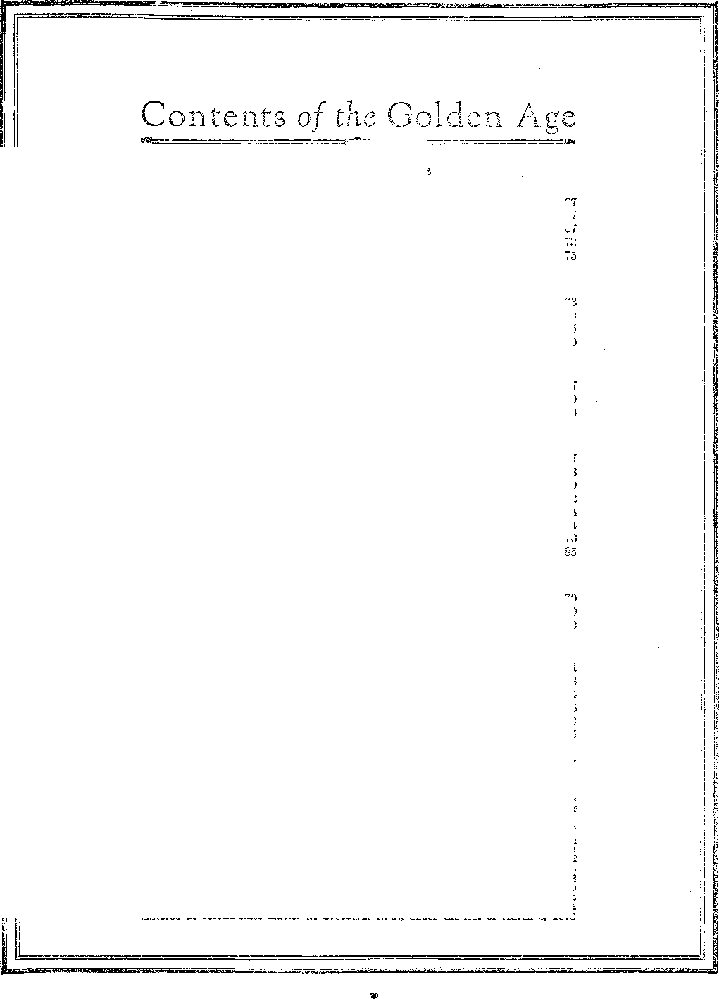
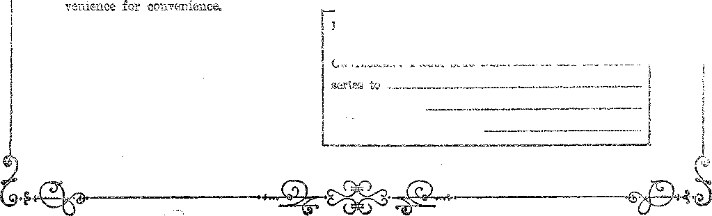

13 liAiLJL aDl AaAA OB HEAVEM?
j _ ?A \ T ' ~ '.. AKWERS
Labor and Economics
71
S3
KIVB Cents a Copt—$1.00 4 Ybar
Make Bemittancbs to THIS GOLDEN AGE£i
Australasian . South African
. 38-40 Irwin Avenue, Toronto, Ontario 496 Collins Street, Melbourne, Australia S Leila Street, Cape Town, South Africa
E’onsioit Ofpicbs : British . .
■ Canadian
KJjgOS:
A® Homs and Abroad ...... Slain in the Industrial Battle . . .
Horrible Conditions Among Dye Work,.rs
Distress of British Miners ....
Women Miners in Japan .....
Social and Educational
North Carolina Chain Gang Courtesies . . . , , The Police of Concord, Mass. .......
Child Slaves in Hungary.........
Kadio Programs ............
Finance—Commerce—Transportation
Increase in Negro Banks ............
The Improvement of Newark Bay ........
Tds GLOBY AND COBBUPTION OE THE Ail EBIOAN DOLLAB . .
Political—Domestic and Foreign Air Stations in Mid Atlantic ......... Free Speech on the Toboggan ......... A Petition to Violate the Constitution......
The Mexican Situation ............
Affairs In France..............
“The Hungarian Tyranny” ..........
Events in Canada ..............
Cabving up Abyssinia ............
Science and Invention
New York to Have a Planetarium ....
World’s Largest Generator .......
Power of the Millikan Kays .......
Belicion and Philosophy
A Seance in the Great Pyramid......
St. Petes at the Gate (Poem) ....... TBUTFi SfEEAPING IN LITHUANIA .......
Some Thoughts Respecting the Gjuww: . . . Is Hall in Heaven ob Hell? ........ Studies in “Tie IIabp oe God” .......
67
67
67
63
75
79
67
70
80
67
68
69
72
74
74
76
70
70
70
84
86
Published every other Wednesday at 18 Concord Street, Brooklyn, N. Y„ USA bv WOODWORTH. HUDGINGS & MARTIN ’
Copartners and Proprietors Address: IS Concord Street. Brooklyn,. H. Y,, U.S.A.
CI1AYTON J. WOODWORTH . . . Editor ROBERT J. MARTIN . Business
WM. w HUDGINGS . . Bee’y and Ureas. "
Noties to Subscribers: We do not, as a rule, send a card of acknowledgment for a renewal or for a new subscription. A renewal blank (carrying notice of expiration) will be sent with the journal one month before the subscription expires. Change of address, when requested, may bo expected to appear on address label within one month.
. . 84 Craven Terrace, Lancastsr Gate, London W. 3
Entered as second-class matter at Brooklyn, N. under the Act of March 3, 1879
SSM^asMSssseassssKSHas^^
Winns® VIII . Brooklyn, N.Y., Wednesday, Kovembar 8, 1S2S 18l
'Horrible Conditions Among Dye Workers
Traffic Conditions in South Jersey
TELE Workers’ Health Bureau has done a commendable public service in calling attention to the horrible conditions among dye workers at Passaic. Of seventy-seven dye workers examined not one was free from physical defects. One-third were found with heart disease, high blood pressure or both. Three had tuberculosis. Seven more have serious respiratory disturbances. Over one-third were unable to digest their food. Over one-third had constant headaches. Over four-fifths had severe irritation of eyes, nose and throat. These 'workers average fifty-nine hours a week. They get $15 to $20 a week. Rest rooms, wash rooms, places to keep street clothes, and decent toilets are things unheard of. Workers are expected to go home in winter with dripping garments, stepping out of steaming hot rooms into the bitter cold.
Something to Think About
MAN who was one time president of the ■ ■ United States, and who knew how to use
ths English language far better than do most people, gave us something to think about when he said, “I would rather be defeated in a cause thaw, triumph in a cause that shall finally be defeatsa."
tiSJjQO Slain in Bailie
~ AS - - - ' - ~ '
-1 aia'a twangs are oiai.n m ruittic, toe moustn-L battle.
or ninety working days and an iroaieu.!.ablc amount of sut-- s * - ”, r, ' s any deaths
or accidents in six states whore there are no compensation laws. The maximum 'compensation in the great industrial state of Pennsylvania gives the injured worker $12 per week.
SINCE the opening of the Delaware Biver Bridge, so much Philadelphia. automobile traffic has flowed into South Jersey that the Jersey state police have found it necessary to escort the truck loads of fresh fruits and vegetables from that territory through the most congested areas, to enable them to get to Philadelphia and New York in time for early market the next day.
Air Stations in Mid Atlantic
"D BITISH newspapers are giving space to the scheme put forward by Mr. Howard Armstrong of Philadelphia, Pa., for a regular transAtlantic air service w’ith eight "islands” moored at intervals between America and England. Each island would be provided with a hotel and would have an area of 100 acres. The landing floor would be seventy-five feet above the surface of water and out of reach of the highest waves. It is estimated that the scheme could b® put into operation for about $400,000,000.
Increase in Negro Banks
•___ e L ~ r . I calls attention to the
fact that twenty-seven years ago. when Bocker T. Washington organized the National Negro Business League there 'were two Negro banks. Now there are mors than seventy, with a - - J - _ - -
resources of $20,(100,000, and doing an annual r ~ ~ ' 1 Cu-
riousfy enough, southern waits banaere have the reputation of being friwidly disposed toward Negroes who wish io purchaso property, while the reverse is said to be true of northern white bankers. It is this latter attitude of prejudice on. the part of northern bankers which has forced the Negroes to establish their own banking institutions. •
Dog- Burled in Silk-Lined Coffin '
TN SAN FBANCISCO a widow worth $20,-®- 000,000, who achieved fame by marrying her chauffeur, has now achieved more fame by her devotion to a French poodle dog. The dog took sick, and a veterinarian and a nurse were in constant attendance upon it day and night. It was taken to the mountains, all to no purposed Finally it died; and the wife of the chauffeur, and her friends, took turns in sitting up with the corpse until finally it was laid to rest in a silk-lined casket, its head meanwhile reposing on an embroidered pillow. An elegant marble mausoleum will mark the dog’s last resting place. Do we need Christ’s kingdom? Do we?
A Plan That Promises Much
A PLAN that promises much has for its ob-■Am jeet the exchange of correspondence between schoolboys and schoolgirls all over Europe and boys and girls here in the United States. The plan has already been tried in a limited way with boys and girls of Holland, and the results seem admirable. It promotes friendship and understanding. It is surprising what excellent English is used by the little Dutch boys and girls in their correspondence.
Baggage Men Hit by Styles
would have supposed that the baggage ’ ® men would be hit by a change in styles? Yet such is the case. Old timers in the business say that, as a result of scanty - attire worn by both men and women, the modern vacationist carries his or her own baggage to such an extent that only about one-third the pieces of baggage are handled by the transfer companies as was previously the case.
The Men Are on Strike
npHOSE long-suffering members of the rm~ J= man family, the men, are on-strike against the abominable clothes they have been wearing in summer time. The revolt, which started in Vienna, has spread to Berlin: and from those who have been roasted alive every summer a mighty chorus of protest is going up that they be allowed the same privileges of .light, airy, comfortable shirtwaists for summer tvear as are granted to other human beings. Whether the women will permit this, or whether they will compel the men to continue to dress and look
like beetles Bummer as mains to be
and to be about as oonfortable fe a polar bear in a rolling mill, re-i
Writes an Operetta on a Sickbed
If Jaxs Wiiwiams of New York has dis-XO. tingulshed herself by writing an operetta while a helpless prisoner in bed. At one time she made her living as a music teacher. ’ Then cam® ’ sickness and helplessness. But she still works, and one of her operettas has been broadcast re- i cently all over the metropolitan area. Her pupils helped her to arrange the scores.
Philadelphia Judge Wants a Mussolini
ipiIE New York Times quotes a Philadelphia J- judge as saying in open court that he advocates a dictator here, a Mussolini; and that he is serious about it. Dispatches seem to show that the judges in Italy have to do about as Mussolini says or they lose their jobs. Suppose the wrong dictator got in? Then what?
Free Speech on the Toboggan
TlpHE Supreme Court of Indiana has ruled that a person may not tell even the truth regarding a court decision about himself or his paper, if the truth reflects in any way on the court or the decision. This decision was backed up by sending a 59-year-old editor to the state penal farm for ninety days and fining him $500 for contempt of court.
North Carolina Chain Gang Courtesies
THE little courtesies which go to make up life in North Carolina chain gangs were disclosed when N. C. Cranford, chain gang bass, beat to death two Negroes who claimed sickness under the terrific heat and inability to work. No doubt Mr. Cranford is a strong believer in the doctrine of eternal torture and is trying to get his hand in now, so that he will be a valuable man in the service of his god when he gets to his heaven.
Cook County’s New Guests
COOK County jail is now harboring- thirtyeight women for periods up to sixty days, for violating injunctions in a strike. The men who arrested these women in Chicago after first filling the air with language described as profane, abusive and obscene, were thirty uniformed police, thirty-six plain-clothes detectives, and twenty-five private detectives. Not one of these gentlemen was arrested for violation of the law against the use of such language.
Half a Million tn Prison Every Year
VERY year in the United States there are a half million men put into prison and as many released. This is at the rate of 1,800 every day in the year, and means that every year about one man in forty-five goes behind the prison bars, there or thereafter ruined for life.
The Police of Concord, Mass.
THEY must have a nice police force in Concord, Massachusetts. At the recent anarchistic outbreak there, when college graduates, most of them young ladies, were repeatedly rotten-egged and called vile names because they had come to Concord to study the Origins of the World War, and kindred peace topics, the police of the city looked on and raised not so much as a warning hand. The good sense of the peace students finally shamed their attackers into decency; and the demonstration against them, staged in the name of patriotism, really became a boomerang.
'A Petition to Violate the Constitution
IN AN address before the United States Senate last April Senator Borah, referring to the attempt to make New York wet, said:
I wish to refer again, for the consideration of the Senate, to the great referendum which the people are going to hold in the State of New York, They are going to petition the Congress of the United States by the voice of the people of New York to do what? To violate the Constitution of ths United States. They propose to petition us to leave the enforcement of tha Constitution to the States—a shameless proposition.
Sees the Need of Better Governments
XTenby Thoektok, President of the Canadian
National Railways, is reported as having recently told a body of Canadian capitalists: “We have not yet hit upon a form of government which will preserve freedom for the masses and likewise create efficiency and honesty in the administration of public affairs. The present system replaced worn-out feudalism. No doubt the day will come when some other scheme will be substituted for the system which exists today and which involves serious injustices and inequalities.” Mr. Thornton sees the need foot Christ’s kingdom.
Wireless Promotes Vegetable Growth
ARDENERS in the vicinity of broadcasting stations report that their vegetable® grow profusely under the influence of radio waves, some even claiming that the difference in growth is as much as thirty percent. It is also claimed that the radio waves have a like beneficial effect upon human beings brought into close or frequent contact with these waves.
Centipede Grass for Southern Pastures
HE United States Department of Agriculture announces the importation from China of a new form of grass, styled centipede grass, which is peculiarly adapted to the rejuvenation of southern pasture lands. In its early growth the plant adheres closely to the ground; but after the runners have well interlaced, the blades rise above the ground three or four inches and afford excellent pasturage for grazing animals.
Decrease in Crop Area
JN THE area of harvested crops during the last five years there has been the very considerable decrease of 19,000,000 acres, or about five percent of the total area under crop cultivation. This is partly due to the decreased number of horses and mules that no longer need be fed. But America could produce many times all the food necessary to sustain all the people now living here. In due time, with the incoming of Messiah’s kingdom, man will no doubt learn that he can live and on joy. perfect health on a fraction of the food he now wastes.
Nezs Method of Splitting Wood
■A NATIVE of the state of Washington has invented a gun, made of steel, eighteen inches long, which is hollow at ©ne end for four inches. The gun is loaded, driven into the end of a log, and when fired, will split the largest log into six ©r seven pieces. It is claimed that with, this gun it is possible to split three times as much wood per man as by older methods.
TT HAS been, discovered that high power radio stations give great trouble to homing pigeons, and also that the semi-circular canals in the pigeon’s ear form electro-magnetic circuits* These discoveries are said to show that pigeons can, in effect, hear the magnetic currents in the earth, and that at each change of direction the pigeon feels the electrical response in its brain.
A DUTCH astronomer, Dr. Panneltoek, has discovered to tile right of the belt of Orion a huge dark spot, estimated to be as far across as 150,000,000 times the distance from our earth to our sun, and by far the largest object observed in the universe. It is supposed to be either a cloud of dust or one of gas. It occupies one-third of a line drawn from the Pole Star to the sky line.
The Improvement of Newark Bay
DURING the World War the city of Newark, N. J., purchased for $100 an acre a large quantity of marshy land on the edge of Newark Bay and began the improvement of it. Today that plot of twelve thousand acres is worth $30,000,000. Now a determined effort is at last on foot to improve the Jersey Meadows, - the great area of waste land which is such a source of wonderment to all persons arriving in New York from the west. 20,000 acres marsh land lie here within thirty minutes the heart of New York
of> of
New York t& Have a Planetarium-
H1HE dome of the Grand Central Station
in
A New York contains a fixed representation of a portion of the starry heavens and is quite impressive; but a new device called the planetarium has become popular in Germany, which puts ours far into the shade. By means of projected lights on the interior of a dome, all the motions of the heavenly bodies are reproduced, magnified and speeded up. a thousandfold. The .results are so realistic that visitors lose all sense of proportion and imagine themselves transported to a different world. The Museum of Natural History will goon install one of these planetariums in New York. Eleven of them are ftlzeadx in use in Germany.
World’s Largest Generator
rpiIE world’s largest generator has just been “®- lowered into place in the plant of the New York Edison Company at Fourteenth Street and East River, New York The machine, which, weighs about one thousand tons and .will develop 80,000 horsepower, is expected to save 800,000 tons of coal a year. Eight other generators of equal size will complete the plant. Each one of these machines, it is calculated, will furnish enough power to light 300,000 six-room homes.
The Power of the New Rays
TN AN announcement by-the Smithsonian In-®- stitution concerning the new rays discovered by Professor Robert Andrews Millikan, the statement is made that while X-rays are stopped by a thin sheet of lead, yet the Millikan rays will go through a layer of lead six feet thick. It seems that all space is alive with these new rays. They do not originate on the earth, but come in to us with the velocity of light from the great universe beyond the atmosphere. It is our thought that these new rays are parts of the display of power accompanying the second advent of the Lord and will be used by Him to accomplish purposes which we do not now comprehend.
Vitaphone Stirs New York
npHE Vitaphone, the new invention which synchronizes sound with motion pictures, has taken New York by storm* The New York Times, commenting on this, says:
The natural reproduction of voices, the tonal qua!" ities of musical instruments and the timing of the sound to the movement of the lips of singers and the actions of musicians was' almost uncanny. The future of this hew contrivance is boundless, for inhabitants of small and remote places will have the opportunity of seeing and listening to grand opera as it is given in New York; and through the picturing- of vocalists and small groups of musicians, or instrumental choirs of orchestras, the vitaphone will give its patrons an excellent idea of a singer’s acting and an intelligent- conception of the efforts of musicians and their instruments.
Another Accoutrement of Civilization
THOSE who are proud of their alleged Baboon or Orang-Outang ancestry (and therei are many such in these days) are jubilant oveu the invention of an inflammable bullet which enables machine gunners not only to trace the route of their projectiles toward the other fellow^ head or heart, but also to set him on fire with a bullet which will burn long after it reaches its destination. The baboon worshipers point out that no baboon ever invented such a useful method as this for disposing of his fellow baboons. Humanity is certainly evoluting wonderfully. Look at the things it does and can do which no lion nor tiger nor wolf nor jackal nor any other wild beast nor venomous reptile ever did to its own kind.
Where the Rainfall Comes From
A FEW years ago we rvould have said that rains are caused by evaporation from the surface of the ocean, and the moisture being blown in the form of clouds across the land. This, is true, but not nearly so true as we had supposed. It becomes increasingly apparent that much of the rainfall is collected from the forests, which are nature’s reservoirs. A forest-denuded land, or a land without vegetation, has nothing to cause the collection of clouds. Invade a desert with growing plants and shortly it ceases to be a desert. All the deserts of the world are due to disappear because of invasions of this type. Baphael Zon, of the United States Forestry Servi.ce, claims that seven-ninths of the rainfall on dry land is derived from evaporation from the land itself.
Yellow Fever Subject is Rewarded
f L. West, one of the brave men who vol-'W unteered to allow themselves to be bitten by xnosquitoeK infected with yellow fever germs, and. who milbred pwmanont disabilities because of ......... _ _ 1. ...
yllS-BOnT <i’’ W lU’J dm 1.11 SpSC7toll xcC-
' ■: ■ : ■. <..■ ... c. ■ : . . r. , w. a : r v' ■ ■; ;
io humanity at the time the investigations were made, >n pvw, in lytHj.
Flfiw hSti.ee to the lewh
"p L.A.TINUM is so ductile that a cubic inch of •1- . the metal will make bO.OUO miles of flue platinum wire, or enough to go around the earth twice at the equator, Platinum sells for $117 an .ounce. The principal source has been the Ural mountains, but those deposits are becoming exhausted, and Colombia and the Transvaal are now considered the likeliest sources for future supply. •
Fifteen Days for Slapping the Preacher
A KENTUCKY Baptist preacher not finding anything in the Bible upon which to preach volunteered the remark that no virtuous woman would bob her hair. Thereupon one of the bobbed hair variety arose from her pew, slapped his face, and is just out after serving fifteen days for it.
Krishnamurti is a Spiritualist
Mr. Krishnamurti, Mrs. Annie Besant’s “Messiah”, about whom the papers have much to say, is a spiritualist. He admits being under spirit control and in spirit communication frequently or constantly with one whom he designates the Great Teacher, meaning thereby Christ Himself. But this Hindu’s “great teacher”, in the minds of Bible students, cannot possibly be other than one of the fallen angels rvho infest the atmosphere of our earth, ever on the alert to deceive whom and when they can.
A Seance in the Great Pyramid
ADVANCED . Bible students believe that the Great Pyramid at Ghizeh is the witness to the Lord in the land of Egypt, mentioned by the prophet. (Isa. 19:19) They will be shocked to know that, a band of spiritualists under the guidance of Bev. J. W<. Potter of fet. Luke's Church, Forest Hill, England, will attempt to hold a seance in the King’s Chamber of that structure some time this coming December. Three mediums and. a. hundred or more spiritualists will be in the party.
iiO - - -
_ K _ “v r . r w mu .
V happened, in the dark ages m a way to suggest that iiotliiiig or the kind could happen nom Don’t fool yourself. The hand and toe lossers are still with us, and the people who want to have their hands and toes kissed are as human today as they ever were. When the mayor of a great city, or the governor of a great state, ©r a high executive of the national government can kowtow to the representative of a foreign monarchy, almost anything can happen to the people, and happen suddenly, too. The inquisition may be just around the corner; but there is another corner too. and around that other corner is Christ’s kingdom, coming in great power and glory to lift up the poor and needy and to deal out absolute justice to all classes of people without fear or favor.
Zn the President’s Home County
TN THE President’s home county of Windsor, J- Vermont, statistics show a forty percent decrease in attendance at the churches of the coum ty since 1890, and this despite the fact that the county lias acquired 5,000 automobiles in the meantime. The meaning of this is that no sensible man can or does believe the old fables of an all-loving Creator torturing most of His creatures throughout eternity; and that the churches of Windsor County have persisted in teaching the inherent immortality of every human being, despite the plain teaching of the Bible that the soul that sinneth it shall die. The country churches and all other churches must either go back to the teaching; of the Bible or perish, and the Scriptures show that the latter is what will happen. Purgatory and eternal torture are lying doctrines, doctrines of devils and not Bible doctrines in any sense of the word.
Victoria’s Large Drydock
T VICTORIA, B. C., the largest drydock in the British Empire has just been completed. The dock is. 1100 feet long, and will hold at one time two large ocean liners. It was carved from the solid rock. There.is but one dock in the world that is larger; namely, the Commonwealth dock at Boston.
General Obregon’s Statement fCgsmsRjm Obregon, former President of Max-Ml ic0} in a statement to the press said: .
It is evident that the high dignitaries cf the Catholic Church provoked this conflict when, through the month of its most exalted representative, Senor Mora y del Bio, the first declarations were made public, with an evident rebellious spirit against the fundamental laws in force. The conflict, will disappear automatically when ths directors of the Catholic Church in Mexico will subordinate their vanity, at present wounded, and declare that they are ready to obey the laws and the authorities who are there to see they are complied with, and when, they advise this line of conduct to all believers.
President Calles’ Statement
EFEBRING to the manifesto of the so-called National League for the Defense of Religious Liberties, in which the Knights of
Columbus in Mexico have undertaken the overthrow of the Mexican government by the inauguration of a boycott affecting all phases of life, President Calles said:
I well understand that for peoples such as that of the United States it is difficult to comprehend the fact that there are scoundrels who seek to cover their political purposes under the mantle of religion. The project of the group of Catholic agitators to which I refer will have no effect on the social and economic life of our country and will constitute a definite manifestation of their lack of strength.
As to the religious laws, President Calles said: “We have had neither necessity nor desire to make new laws in this matter. We have limited ourselves to requiring the fulfilment of those laws already existing.” It may be added that President Calles and his wife are both Catholics.
What Mexican Labor Thinks of Situation
PEAKING of the influence of the Catholic church upon education in Mexico, Mr. Roberto Haberman, Representative of the Mexican Federation of Labor in the 'United States in. an article in the Brooklyn Eagle, said:
After 300 years of absolute control of the educational life of Mexico, the world was called upon to view a people nearly ninety percent illiterate, and one of the crimes charged against the Obregon and Calles administrations is that they have insisted upon taking control of the primary education of Mexico away from the Church, and giving it to the state. In six years time, through ths efforts of these two administrations, illiteracy has been reduced to sixty-two percent.
Baptisms in Mexico City
TN THE Nation tor Amgast 18th Carleton A Beals thus describes baptisms as he saw them administered at the Zocalo, Mexico’s.and America’s largest cathedral, on July 29th, the day before the papal “strike” began: '
Hour after hour the baptismal process continued. First came a soldier, objective and fierce, then a Red Cross aide, an acolyte with a candle, a priest in whit® and gold robes—-swipe of his thumb from holy water to the forehead of each squalling infant, a swab of cotton by another acolyte—finally, the collectors, bringing up the rear, reaching out hands f©r the fifty-eent&v© piem. Hour after hour, watting tow gave place to waiting row, and still from the bsdt of th© cathedral cams- the press of babies, ever more babies. One woman.. has but twenty centavos. The coin is snatched by the collector with a snarl, “Baptism’s no good.” On to the 'next and the next: more snarls for those who do not have their change ready. Here a peso is offered, the fifty centavos change is tossed back into the throng. The barefoot loser sprawls on his hands and knees, hugging his child in one arm, sticking his hand under the feet of the trampling multitude.
'Another Leprosy Remedy Discovered
FOB several years Chaulmoogra oil has been used advantageously in the relief of leprosy.
Another remedy, still more beneficial, has been discovered in Brazil, where it grows in great quantities. The plant is distilled or crushed, ' and the oil used as in the ease of Chaulmoogra.
The oil is considerably cheaper to produce and is more effective.
Europe Seething with Hatreds
Oswald Garrison Villard, writing from London, in The Nation, says:
Europe is seething with hatreds, and jealousy. It is impossible to bo here and believe that the situation ia not just as bad as it was two and a half years ago. Many think it is worse, if only because of the rise of Mussolini.
Preparations for the Final Conflict
PREPARATIONS for the final conflict proceed apace. A dispatch from London says:
While Great Britain’s airmen practise the most skilled massed formation flying the world ever has seen, France experiments with a pilotless air ram, directed by radio, to charge an enemy’s close airplane formations. England last year demonstrated that she had developed one-man speed tanks capable of moving at thirty-five miles an hour and also had perfected farm tractors designed for rapid conversion into tanks. And England also recently launched a mystery submarine known as ths “X-l”, the largest in the world, with & displaeement of 8600 tons and capable of voyaging 10,000 miles without refueling. The X-l is> equipped with 12-inch guns.
The Results of Ireland’s Census
THE results of the Irish census show that while the North of Ireland has gained slightly, yet in the Free State there has been a drop of 166,886, which brings the total popula-
. ti@n ©f the Free State & les® than B,000#000 song. The game phenomenon of ttesertien tbt
country for city life £$ as apparent in Ireland. ea it is here. Dublin’g population has grown ihf? 21,000.
A Remarkable Leather Belt
A LEATHER belt has jmt been scrapped fa Glasgow after running at the rate of forty miles an hour, fifteen, hours per day, for a periol of fifty years. It is calculated that in that thn® this belt has run 9,000,000 miles. To make the belt the hides of sixty oxen were required. Th® belt was forty-two inches wide, made in three thicknesses, cemented together.
Britain Revels in Gooseberries
ID BITAIN has been having'a wonderful time AJ ^rfth gooseberries this past season. The berries have been of phenomenal size, specimens running in weight to almost two ounces. Americans in the British Isles have been revelling is the ■ same feast and carrying the berries with them to the ships. Gooseberries in the United States do not grow so large.
Baldwin Snubs the Archbishop
"D remier Baldwin has snubbed the Arch-bishop of Canterbury, supposedly the most important personage in England except the king. The Archbishop took a hand in the strike situation, and made a proposition satisfactory to the miners; but the government refused to place his proposition on the wireless or even publish it in the British Gazette.
Distress of British Miners
WHEN Mr. Baldwin, Britain’s Premier’, cabled to the United States early in August that there is no foundation for any statement as to starvation among the mining population, he evidently minimized the facts. The London Daily News had its correspondents make investigations in mining districts throughout the British Isles, with the result that terrible conditions were uncovered. One of the investigators in his report said:
I saw this morning such obvious proofs of starvation among women that I came away distressed beyond words. We inquired into 123 cases, mostly mothers with babies in arms. A goodly proportion were expectant mothers. Several had not had food for thirty-«!x hours.
One woman, with two children, one only eight Bionths old, received five shillings a week as allowance to care for her family. She fainted when she went to ask for help. She had nothing to eat for three days but was still nursing her baby at her breast; and her allowance was to have been reduced the following week.
No War Debts Being Collected
HE Dearborn Independent tells us that Mr.
Mellon, Secretary of the Treasury, has declared both by letter and orally that the United States government is not collecting any war debts at all, except from Great Britain; that the war debts of France, Italy and the others have been cancelled ; and that the United States is collecting only the loans made since the armistice.
Pullmans of the Skies
ULLMANS of the sides have been built for night travel by airplane between Berlin and
Mo scov/. During the daytime the ten beds can be converted into seats. The planes are heated, have large windows for sightseeing, two pilots and double engines, so that forced landings will not be necessary. '
Who Owns Silesia Now?
FTEB the World War there was much heated discussion over the splitting of
Silesia, part of it being taken away from Germany and given to Poland, The split involved the shifting of many thousands of persons from one line to the other, with much incidental suffering. Now the Silesian properties on both sides of the line have been purchased, by American. interests and will, ho operated by American management.
German Gvmiioa Timm
» ytLils i.tex'imiiis are umiiig g, grem aucmse ox A their aviation program. Up tc date Trerc has not been an accident this year, ana. aviation is sow considered as safe in Germany as railway travel. Plans have been made to open a summer air service between Berlin and Peking, via Siberia, operation to begin next summer. During the winter ten lines, including the lines from Berlin to Moscow and. Berlin to London, will be kept open.
RENCH pride in the city of Paris is so great that when a well-financed building firm, with American connections, besought the privilege of erecting for the French government a magnificent skyscraper to be used for government purposes, the government turned the proposition down, despite the attractiveness from a financial standpoint, because it was unwilling to mar the landscape by having any skyscrapers.
France and Belgium Near Bankruptcy
HE continued fall of French and Belgian f rancs indicates little hope of their recovery
at the tune this item is written. French francs are at 199yd to the British pound, while Belgian francs are 202. In other words, the franc, which a few years ago was worth twenty cents, is now worth considerably less than three cents. The Belgians are denying themselves all luxuries; and even the king and queen are eating the governments grey bread in the hope to prevent the impending financial calamity. .
No Doubt of French Suffering
HERB is no doubt that many American tourists nave played the fool in their extravagances and ostentations in France. There is no doubt also that the French are suffering. Suicides among the elderly have greatly increased, a phenomenon that was observable in. Germany while the mark was on the down grade. What the French need is the Lord’s kingdom.
“The Hungarian Tyranny”
TTjaDER this heading the’Manchester Guard-iaii reviews the recent trial of Socialists and Communists in Hungary, at which more than forty persons were sentenced to prison
These fearful penalties can hardly fail to make a terrible and proioundiy disturbing impression on. itun-garian labor, which has followed ths trial with unusual interest. One fact has emerged with, unusual clearness—not one of the accused committed a criminal offence or did anything that would have been, considered illegal in. England. France or Germany. All the cross-examinations, all the evidence, only proved beyond all doubt that the one aim of the prisoners was to organize legal and constitutional Communist and Left Wing labor parties such as are allowed in. all civilized countries.
Child Slaves in Hungary
TRE London Daily Express reports that the sale and purchase of children in Hungary has become such a fixed enterprise that a regular scale of prices has been established, and the children are being offered in the markets as so much livestock. The maximum price is $15 for a boy or girl of 13 to 15 years of age. The buyers are farmers who are looking for cheap, unprotected labor.
Denmark’s Improved Health
DURING the World War Denmark placed its people on a diet of bread made from whole rye flour to which twelve percent wheat bran was added, cabbage soup, a little meat, milk and fruit, no tea, coffee, spirits nor beer. The result was that during the war Denmark’s death rate fell two percent, while the death rates of Norway, Switzerland, Holland, Sweden and Spain rose from twenty-four percent increase for Norway to forty-six percent for Spain. This improvement continued through the flu epidemic, in the sense that Denmark lost but three-fourths of those expected to die.
Spain’s Cork Crop
ONE of the natural riches of Spain is the oak tree which furnishes all mankind with. cork.
The first two strippings of the outer bark of this tree are inferior because of roughness, inequalities and woodiness, but all subsequent strippings are compressible, elastic, durable, light, soft, impervious to air and water, and nonconductors of heat. The trees are benefited by the removal of these outer layers of cork, and live three times as long if the layer is removed as would otherwise be the case. This shows plainly that the Lord intended this tree to be, as it is, a blessing for the human family.
Soviet Willing te Pay
1TN A dispatch from Moscow the New York Times reports that the Soviet government on more than one occasion has expressed its willingness to enter into negotiations for funding the old Russian debts, provided that its creditors agree to take 'Into consideration Russia’s losses and sacrifices in the great war, which were greater than those of any allied powers and which enormously reduced the national wealth.
Plain Talk at a Convention
AT A Y. M. C. A. convention at Helsingfors, Finland, a young delegate from India, a professor of philosophy, took the breath away from the delegates by saying, “It is impossible to be a Christian under the present world, order. Your churches and Y. M. C. ATs are subsidized by corrupt rich men who violate the principles of the Christian faith; and you have not the nerve to preach against them, as to do so would cost you your meal ticket.”
Effectiveness of Chinese Boycott
K CHINESE official at the League of Nations made the statement: “If you can find a single man in China in whose breast there does hot beat anti-British feeling, he is not a Chinese. I can officially inform the committee that ths time when China will tolerate foreign interference in her internal affairs is nearing its end.” The same gentleman declared that in carrying out the boycott 600,000 of the 800,000 Chinese residents of Hongkong had deserted the city within the past year. .
Care of the Insane in China
NO DOUBT there are institutions in Western countries where the insane do not receive the kindest treatment; but in China, according to reports, nothing is done for them. If they steal food or anything else they get the death penalty. In one district it is said that the treatment of the insane consists in putting' them on the ground, with a heavy stone across the chest. If this treatment brings sanity all right, but if not the insane one is allowed to starve to death beneath the stone.
Women Miners in Japan
THE hours of labor of women miners in Japan have just been reduced to twelve per day.
A writer who visited the mines at Kyushu writes:
It was quite a shock to me in a narrow tunnel with four or five inches of water on the bottom, and squeea-ing roof with cracking timbers overhead, to be suddenly forced against the side, while an all but naked woman came splashing through the water, bending her knees and back to keep her head from striking the low roof, carrying an oil safety lamp with one hand and With the other steadying a pole across her bare shoulder, at each end of which hung a heavy basket of coal that she was carrying from the face to the cars.
Is this an Undertaking or an "Overtaking”?
THE following bit of information appeared in the Catholic Registers
Arrangements are being made by the Quebec Provincial Government for a huge and unusual undertaking yhich may require about ten years’ technical ana skilled work. Quebec is to be the first Province in the Dominion, if present plans fully mature, io be in pos-session of a complete aerial map of its entire territory—■ lands, forests, waterways and seaboard lines. Partial understanding has been reached between Provincial authorities and at least one aviation company for the taking of photographs of the whole Province from the • air. The first air 'expedition is expected to start, next week and will “cover" the entire Gaspe Peninsula. Later on, other fliers will start to soar over other portions of Quebec. As practically every yard of the entire territory of the Province has to ba gone over by the aviators, and as no work can be done when the weather is too hazy or foggy or when the land is covered with a pall of smoke from forest fires, the work will take a long time to carry out.
Brotherly Love
UNDER the above heading the following letter appears in the Truro, N. S., Daily News on the occasion of the death, of the parish priest at Bridge water:
To the Officers and Members of St. Joseph’s Church, Dear Friends:
The Members of the Minieterial Association of Bridgewater tenderly condole with you in your natural sorrow .for the loss of your beloved shepherd, Rev. N. 0. Mao-’ Carthy, and commend you for consolation to Him who orders all things for the best. The sudden death of our fellow laborer in the Master’s vineyard has given us a ■distinct shock, but with the Christian’s vision of a life beyond the gate of mystery we can go courageously on with our tasks.
By moans of this letter we join with you in paying tribute to Father MacCarthy’s memory.
Very sincerely yours,
(Sd.) Geo. P. Ekdy, Secretary Ministerial Association of Bridgewater.
'Climatic Changes
PliOPOS of the article in the June 16th ig-a sue of The Golden Age on "God’s Hand in Earth’s Wcathari’, it may be interesting to note that owing to the exceptionally mild winter and early spring in British Columbia a worrying problem was created for the fruit growers, As the fruit usually ripens during the school holidays, the berry-growers have been engaging school children to a large extent in gathering their fruit crops. This year, however, the picking season opened at least two weeks before the schools closed.
On the other hand, owing to late spring and continued cool weather, the berry season was at least two weeks later in Ontario than in previous years.
Shingles
HP HE standing cedar timber of British Colum-bia is twenty-two percent of the entire stand of all timber. Last year the shingle mills of the Province cut 2,900,000,000 shingles. The value of this output was in excess of $10,000,000. Approximately ninety percent of the output was exported to the United States.
How Did It Get in?
TN BELLEVILLE, Ontario, recently an ordin-J- ary hen’s egg, packed last fall, yielded startlingly unusual contents when Mrs. George Madden broke it today. Embedded in the albumen lay a tiny snake about four indies long, curled up and apparently dead. The body of the freak was about the size of a fish-worm. The yoke of the egg seemed in perfect condition; and the ' egg, except for its revolting contents, was otherwise quite normal. The specimen has been preserved in alcohol and forwarded to the Ontario Agricultural College, Guelph,
A Very Rare Case
AT NAPANEE, Ontario, a pure white rose, flawless as to shape and perfume, bloomed on the limb of a large crab-apple tree in the garden of William Clayton, South Napanee last June. Hundreds of people visited the place to prove their skepticism, and hundreds went away convinced that sometimes nature does go on a spree. Mr. R. Boyd Thomson, Professor of Botany at the University of Toronto, when asked for his opinion, stated: “It is quite possible that a rose could be grown on a crab-apple tree, but I have never heard of its being done. The rose and the crab-apple 'belong to the same family, and it is possible to graft one to the other."
W. A. Skilleter of Dunlop’s, Limited (florists), said that “in all probability the rose would continue to grow on the tree and blooms w
increase from year to year. There is nothing mysterious or miraculous about it. The rose simply grows as an ordinary bush, taking its nourishment from the limb of the tree rather than froni the ground.”
'• Some Money-Making Schemes
T^HE Sentinel of Toronto has been calling at-tion to R. C. activities in Canada and in early summer published the following:
The Boman Catholic “shrine system” has now invaded Ontario. This latest money-making scheme Ie to have its headquarters at Fort Ste. Marie, near Midland, the scene of the murder by Indians of the early Jesuit missionaries, John de Brebeuf and his companions.
In order to stimulate interest and encourage pilgrimages to the place, it will be officially opened and blessed on next Saturday by Cardinal O’Connell, of Boston; and the pilgrims, of course, will be expected to spend a little money in honor of the martyrs. Brebeuf and his companions, though beatified, cannot attain sainthood until two miraculous “cures” have been effected by the shrine, and the clergy are scouring the country for evidence of these cures. A Nova Scotia woman and a Mrs. R. D. O’Gorman, of Toronto, lay claim to cures effected by prayers to the Jesuit martyrs. No doubt these cures will be “discovered” by the bishops who desire to make the shrine a paying concern.
The Sentinel is also responsible for the information that “twenty-two Roman Catholic priests in Montreal drew $36,890.84 from the Colonization Department of Canada in salaries and expenses for the year ending March 31, 1925. These priests are classified as sub-agents. With fifty permanent employes of the Department in Montreal, what need is there for the priests? . . . What these twenty-two priests do to earn the money is not stated in the government report, but presumably they are the repatriation force, paid to bring back to Canada the French Canadians who have emigrated to the New England States. That is a work of futility, as the French press frequently points out; but it provides a nice living for a group of Roman churchmen at the public expense.”
Shrines
PEAKING of “shrines”, the Saskatoon Star gives space to show in detail how “over 5,000 join iu a pilgrimage to the shrine of Saint Theresa de Lisieux at Wakaw”. It says in part:
Men and women of many languages and from many lands at the week-end paid tribute at the Shrine of SM Theresa de Lisieux at Wakaw to the memory of th@ canonized Cannelite nun.. More than 5,000 people, going motoring from as' far as Edmonton and from points on the Manitoba boundary, attended the pilgrimage to the shrine, which was inaugurated Saturday evening, the pilgrimage lasting through the greater part of Sunday. The procession which followed pontifical High Mass, held outdo ors, was a mile-long.
Juvenile Crime tn Canada
TVTb‘ Justiob Dysabt, of the King-’s Bench, X¥-*u Manitoba, recently gave the most ex-■ haustive analysis of juvenile crime tendency in Canada that has yet been put forward. He declared that the percentage of youthful criminals has been increasing very rapidly during the last few years, and after a review of the conditions and causes placed the major part of the blame squarely upon the home. One set of figures which Judge Dysart presented has been closely studied by many police chiefs and others interested in social work since. He calculated the male population of Canada at 3,456,000 on the basis of the census of 1921, and talcing the latest criminal statistics available worked out this proportion of criminals and ages:
Juveniles 10 to 16 years of age, 1 in 87
Among youths 16 to 20 years old, 1 in 75 Among men 20 to 40 years of age, 1 in 106 Among men 40 to 100 years old, 1 in 245.
This would seem to bear out what the Apostle Paul foretold in writing to Timothy (2 Tim. 3: 1-3): “This know also that in the last days perilous times shall come. For men shall be lovers of their own selves, covetous, boasters, proud, blasphemers, disobedient to parents, unthankful, unholy, . . . lovers of pleasures more than lovers of God.”
May not much of the blame be laid at the door of the glorification of crime in the cheap movies and the comic (?) page in the Sunday papers?
Educational .
THE Vancouver Daily Province, commenting on the anomaly of 400 applications for seven vacancies under the Vancouver School Board, says:
Our educational system pays too much attention to the white collar jobs. It makes their approach too easy, and discriminates too much in their favor. Ai a »• ault, through our high schools and our university wo are providing an excess of white collar workers j and when work for them is not forthcoming, they drift away and are lost to us. This is serious, but it is not the only evil we are producing. As the Educational Survey report hinted, there is undoubtedly a tendency to inculcate In our young people a belief or a feeling that the work ©f a fisherman, the farmer, the logger, the miner, the trapper or the skilled mechanic, is not quite so honorable as that of the professional man, the business man ©r the clerk. And in a country like ours, which is largely wilderness and requires developing, that is decidedly a dangerous idea to be emphasizing. The professions have had the field to themselves long enough. The technical side of education should be getting a chance.
T. MARY’S R. C. Church in Barrie, Ont., was partially damaged recently by a dynamite explosion, and one William Skelly was arrested as being the perpetrator. He is alleged to have stated that it was done at the instigation, of the K. K. K., who recently staged a demonstration in Barrie. This has been denied by the . officers of the organization in a written declaration. Th® subsequent arrest of two factory hands as being implicated with Skelly has moved the Attorney General to intimate that, if the facts warrant it, his Department might conduct an investigation into the general activities of the Ku Klux Klan in Ontario.
St, Peter at the Gate (Anonymous)
St. Peter stood guard at the golden gate With a solemn mien and an air sedate, When up to the top of the golden stair A man and & woman ascended there.
They applied for entrance as they stood Before St. Peter, so great and good, In hopes the City of Peace to win, And asked St. Peter to -let them in.
The woman was tall, and lank, and thin, With a scraggy beardiet upon her chin; The man was short, and thick, and stout, His stomach was built so it rounded out. His face was pleasant, and all the while He wore a kindly and genial smile.
The choirs in the distance the echoes woke, And the man kept still while the woman spoke i
“0 thou who guard’st the gate,” said she, “We two come hither, beseeching thee To let us enter the heavenly land.
And play our harps with the angel band.
Of me,-St. Peter, there is no doubt;
There’s nothing from heaven to bar me out.
I’ve been to church three times a week And almost always rise and speak.
I’ve told the sinners about the day When they’d repent their evil way; I’ve told my neighbors. I've told them all About father Adam and the primal fall; I’ve shown them, what they’d have to do If they’d pass in with the chosen few; I’ve marked their path of duty clear, Laid out the plan for their whole career;
I’ve talked and talked both loud and long.
For my lungs are good and my voice is strong J So, good St. Peter, you’ll clearly see The gate of heaven is open to me. '
"But here’s my husband; I must say, He has; walked the narrow way.
He smcl.es and swears, grave faults he’s got And I don’t know if he’ll pass or not.
He never would pray in earnest long, Nor go to church nor join in song;
So I had to leave him in sorrow there While I, with the chosen, united in prayer. He ate what the pantry chanced to afford, While I, in my purity, prayed to the Lord; If crumbs and cucumbers were all he got It’s a chance if he merited them or not.
“But oh, St. Peter, I love him so, To the pleasures of heaven please let him go * I’ve done enough—a saint I’ve been.
Won’t that atone ? Please let him in I
By my grim gospel 1 know ’ids so That the unrepentant must roast below;
Bid; isn’t there some way you can see, ’That he may enter ’who’s dear to me ?
It’s a narrow gospel by which 1 pray. But the chosen hope to find some way Of coaxing, bribing or fooling you So that their relatives may amble through.
“And say, St. Peter/it seems to me This gate isn’t kept as it ought to be.
You ought to stand by that opening there And never sit down in that easy chair.
And say, St. Peter, my sight is dimmed, But I don’t like your whiskers trimmed; They’re cut too short and outward sprawl. They’d look much better not cut at all.
Well, we must be going our crowns to win.
So open, St. Peter, and we’ll pass on in 1”
St. Peter sat still and stroked his staff;
Then in spite of his dignity he had to laugh. Finally he arose in his stature tall,
And pressed a button upon the wall, And said to the imp ivho answered the bell, “Please take this lady around to hell!”
$ * * « *
The man stood still as a piece of stone, Stood sadly, gloomily, there alone.
His whole life long this thought he’d got, That she was good and he was not.
As he saw his wife shoved down below
He was sure he too would have to go;
For if she must abide in the regions dim There wasn’t a ghost of a show7 for him. Then slowly he turned, by habit bent, To follow wherever the woman went.
But Peter,' standing on duty there, Observed that the husband’s dome was bare. He called the gentleman back, and said, “Friend, tell me, how long have you been wed?’? “It’s thirty years,” he said with a sigh.
And then he curiously queried, “Why?” St. Peter was silent. With head bent down He raised his hand and scratched his crown; Then, seemingly a different thought to take, Slowly, and half to himself, he spake: “Thirty long years with that woman there?
No -wonder you haven’t a vestige of hair! Swearing is wicked; smoking’s no good; And you did both—well, I should think you would! 'Thirty full years with that dame’s tongue sharp— Ho.! Gabriel! Please give this man a harp, A jeweled harp with a golden string.
Good sir, pass in where the angels sing I And, Gabriel, assign him a seat alone, One with a cushion, up near the throne 1 Call up some angels to play their best Let him enjoy the music and rest;
See that on finest ambrosia he feeds, He’s already had all the hell that he needs.”
Radio Programs .
[Station WBBR, Staten Island, New York City.—416.4 meters.]
Friday, Evening, November 5
7: 30 Watchtower Concert Trio.
7: 50 Fred Twaroschk, tenor.
8: 00 Bible Lecture, “God’s Kingdom the Joy of the Whois Earth”—John E. Dawson.
§: 30 Fred Twaroschk, tenor.
8 : 45 Watchtower Concert Trio.
8: 55 Bible Lecture, “Bible Truth versus Man-Mada Creeds”—W. N. Woodworth.
Bunday Morning, November 7
10: 00 Watchtower- Concert Orchestra.
10:20 Fred Franz, tenor.
10: 30 Bible Lecture—Judge Rutherford.
11: 00 Fred Franz, tenor.
11:15 Sunday School Lesson, “The Fall of Jericho"— W. N. Woodworth.
11: 40 Watchtower Concert Orchestra.
Sunday Afternoon, November 7 2: 00 Watchtower String Quartette.
2:15 Choral Singers.
2:80 Bible Lecture, “What is the Hope of the Non-Christtan?”—II. II. Riemer.
8:00 Fred Franz, tenor.
8 : 15 Watchtower String Quartette.
§ : 25 Choral Singers.
8 : 45 Bible instruction—John 3. Dawson,
4: 05 Choral Sing-era. •
4:15 Watchtower String Quartette.
Sunday Evening, November 7 7:00 Watch; ower Violin Choir,
7: 20 Stanley Gohllnghorst, baritone.
7: 30 Bible Questions and Answers—Judge Rutherford.
8: 00 Stanley Gohllnghorst, baritone,
8: 15 Watchtower Violin Choir.
8: 25 Bible Lecture, “The Ransom”—S. M. Van Sipma.
Tuesday Evening, November 9
7: 30 Professor Charles Rohner, violinist.
7: 45 Irene Kleinpeter, soprano.
8: 00 Health Lecture, “The Human Radio Wave Reflector* —Dr. Mae Johnson Work.
8: 30 Irene Kleinpeter, soprano.
8:45 Professor Charles Rohner, violinist.
8: 55 “Listening in”—on Professor Thomas Standwell ani Harry Goodwin,
Thursday Evening, November 11
7: 30 F. S. Barnes, organist. .
7 : 45 Williams Vocal Trio.
8:00 Bible Lecture, “Spiritism and Black Magic Exposea* —R. S. Seklemian.
8: 45 Williams Vocal Trio. '
2:00 F. S. Barnes, organist.
8: 15 Common Sense in Health and Hygiene,
Friday Evening, November 12
7:80 Joseph Bonaceorso, violinist.
7: 45 Camille Schmidt, soprano.
8: 00 Bible Lecture, “Signs of the New Day”— P. H. Harding.
8: BO Camille Schmidt, soprano. /
11 49 Joseph Bonaceorso, violinist.
6 s 00 Bible Lecture, “The Standard for the People
—.John E. Dawson,
The Glory and Corruption of the American Dollar By Theodore Cocheu [Copyrighted 1926 by Theodore Cocheu]
WHEN man discovered himself on this planet he was endowed with a mind to plan, a body to perform, energy to move mind and body, and an abundance of everything necessary for his comfort and pleasure; conditioned, however, upon his cooperation with nature and his own fellows. His mental and physical qualities can be utilized only by his own effort; and there is nothing on this earth of any value whatever without the exercise of effort.
Even the fruits of vine or tree remain on their stems until man stretches forth his hand to pluck them. By plowing and planting he reaps a necessary harvest, and the law of nature decrees that upon the wisdom and vigor of man’s efforts depend the abundance or lack of his supplies. The supplies needed by man may all be grouped under four heads, viz., food, clothing, shelter and recreation—which latter distinguishes civilization from savagery.
When effort is exerted for another it becomes 'service, and no human obligation can be created except by the receipt of service; nor can human service ever be redeemed or satisfied without return of human service or product of service.
A and B owned neighboring farms, each employing five hands. At harvest time the hands from A went to the assistance of B, and B returned a like service to A. This was “Exchange of Human Service", pure and simple, both obligations being exactly measured and fully redeemed. The products of these farms differed, but each was the product of service; and by exchange of the surplus of one for the surplus of the other both were benefited by greater variety. The value of each product thus exchanged was approximately determined by the amount of service represented in it; and these exchanges became known as a Barter System, wherein each article exchanged represented service. This was the first evolution of human service.
This crude Barter System wag improved by the introduction of one material—gold—the product of a mins. Gold represented great serrifi© value while having comparatively little bulk, hence it was easy to transfer; and by official decree it was made a standard to represent general service value. This was the second evolution of human service. Gold as a representative ©f human service made such improvement in the Barter System that exchanges were stimulated and increased in number and value, finally developing into what is called “trade and commerce”. One day's operation of this system., recorded in gold dollars, would now require more gold than the world has produced since the beginning of history. This condition therefore evolved an entirely new exchange system called credit, which is a written acknowledgement of service received and a promise to redeem by the return of a like amount of service value. In this day true wealth is sound credit in excess of liabilities, and is measured in dollars regardless of the material which may express them. The Credit System is the third and last evolution of human sendee.
Each exchange system has served its day and become obsolete, except the Credit System; and it would now be working smoothly and perfectly if not interrupted by a constant injection of the old gold Barter System by money-changers, on the pretense that "gold is the basis of all values”. The fact is that credit has displaced gold as a standard of value. But if gold were released from its dungeon prisons it would lead diamonds for use in the arts and for adornment.
In the beginning of our nation’s history it was necessary for the orderly conduct of business to have "units of measure” by which the quantity of goods and the value of service might be computed. It was therefore enacted that the term YARD shall express the unit measure of Length, the term HOUR the unit measure “of Time, the term POUND the unit measure of Weight, and the term DOLLAR the unit measure of Value. But Professor Charles A. Conant, an accepted authority in matters of finance, on'page 148 of the first volume of his work on. the "Principles of Money”, says:
Value is an intellectual conception rather than a tangible property of matter. It is not possible to point to an object and say that it contains value in a definite amount, as may ba said of that which possesses length., breadth, and weight.
In other words, because value is an intellectual conception, Conant denies 'that an article possesses value in a definite.amount as may be said of length, breadth and weight However, in this definition Prof. Conant flatly contradicts himself, entirely ignoring ths fact that length, Kotbmmsb 3, 1926 breadth and weight are also intellectual conceptions.
BA
The standard yard is the distance or space between two points which have been arbitrarily fixed, and it is illegal to change it. Likewise the standard pound is fixed, being that quantity of any material capable of overcoming a certain arbitrarily determined amount of gravitation. But space, gravitation and time are all simply intellectual conceptions; yet by their use the stars and planets are weighed and measured, and their movements are calculated with such nicety that, though traveling through space with incredible speed, their positions in the heavens are determined and foretold years in advance. Careful examination will show that all units of measure utilized by man are based upon intellectual conceptions, and that no object can be pointed to as containing- an absolute or definite amount of value—any professor to the contrary . notwithstanding.
The American Dollar
EBTAINLY the unit of value should be as exact and unchangeable as the yard, pound or hour; and indeed the American dollar was originally and legally constituted a measure of value as exact and unchanging as the yard is as a Measure of space, or as the hour is as a Measure of time. Our dollar is as logical an evolution of Human Service as the yard is an evolution of space or as the hour is an evolution of time. Each of these units of measure is legally fixed, and they can never vary or change except by misrepresentation or fraud. A yardstick may be short or long, or a clock may run glow or fast; but neither of these imperfections affects the true yard or hour. A pound weight may be of iron, brass or lead; and though each is different in color, size and material, each correctly represents the weight inscribed, upon it, because color and material do not affect gravitation.
It was written in ths Constitution of ths United States that “Congress shall have power to coin money and regulate the value thereof”j and by virtue of that authority Congress, realising that the Unit of Value should be unchanging like the yard and the pound, passed an Act, approved April 2, 1792, which declared: “The larm DOLLAE shall express the Unit of Measure of Value.” Then in order that this Unit of Value might remain unchanged forever, the Act declared further: “Each of these Units shall b® of the value of a Spanish Milled Dollar as the same is now current."1
Money issued by the United States Government as a promise to pay a given number of dollars for given service rendered is in no way affected by time or by the material upon which the promise is inscribed, whether that material be gold, silver or paper; because neither of these affects service any more than iron, brass or lead affects gravitation. It is obvious that the American Dollar, as intended by Congress, is exact and stable like the pound, regardless of the material upon which the dollar inscription is stamped.
The amount of silver in a Spanish Milled Dollar has frequently changed in value since April 2, 1792; but it is perfectly clear that the value of the American dollar was there legally fixed, as certainly as that of specific time, and was intended to be as unchanging as a date itself. Therefore the inscriptions “One Dollar”, “Five Dollars,” “Ten Dollars,” etc., do legally express precisely the same relative values today as they did on April 2, 1792; and any variation from that established standard of value is as criminal as would be the use of any “yard” or “pound” differing from that established by law.
United States money in circulation always represents the exact value stated on its face; and today the “American Dollar” is accepted in all civilized countries in full payment for anything at any time, and no discount is made from its face value by any one anywhere. Indeed, th© value of U. S. Gold Bonds, bearing 4% % interest, is calculated in with our circulating dollars. Even the English Pound Sterling, formerly the world's standard of money value, today “doffs its hat” and kowtows to the American Dollar!
The American circulating dollar is the acknowledgment and obligation of the United States,of a certain value received and a promise to repay. The United States has in -resources as a. basis of credit, more than one hundred dollars to every dollar of currency issued, and an honor unimpeachable which makes every circulating dollar unique in its declared value and certainty of redemption.
The Dollar Value is A STANDARD £ but Se>» vice Values are MUTUALLY DETERMINED. The visible expression of dollars, whether in paper, silver or gold, is A MODERN MEDIUM OF EXCHANGE. The president’s salary of seventy-five thousand dollars per year, and the humble clerk’s pay of five dollars per day, are both computed in American dollars and accepted without question as to quality or quantity, knowing- that the butcher, the baker and the candlestick maker will accept them in full payment for their various wares; and the candlestick maker gives them back to the government in payment for taxes, thereby' completing their cycle in a final liquidation.
The stenographer estimates the value of her services at thirty dollars per week, based upon the cost of living and the degree of her efficiency, and at the week-end she accepts paper notes inscribed: “The United States will pay to the bearer on demand,” etc., thirty dollars. She knows that the notes will be fully, redeemed to her in food, clothing, etc., without the intervention of any “Brokers in Gold or Exchange”. What more can be desired?
Corrupting the Unit of Value
THE glory of the American dollar having been set forth, I will now, reluctantly however, show the reverse side of the story. The United States Government has empowered the privately-owned Federal Reserve Bank system to do specifically four things:
(1) To receive from the government its circulating notes without interest, and at the discretion of the bank as to amount.
(2) To discount and re-discount commercial notes, cashing them with Government (so-called. Federal Reserve) Notes. '•
(3) To exchange Federal Reserve Notes for gold, gold coin or Gold Certificates.
(4) To act as fiscal agents of the United States, having control of Government funds.
During the first year’s operation of these privately owned Federal Reserve Banks they received from the government more than four billion dollars of its good circulating notes wit A out return of anything of any value, even without payment of interest. With these good American dollars, obtained without money and with-©ut price, the banks were able to discount com-Hiereial notes at a net profit of about two hun-drod million dollars; while the government, which furnished the cash for this big business, “derived no income from this source”.
Then the government, requiring vast sums of circulating notes in its own daily business, of necessity borrowed back its own notes from the banks, giving in exchange therefor additional government bonds bearing 4% or 4%>% interest, being about one hundred and fifty million dollars per annum paid by the government for the use of its own credit notes—a complete loss to the government but a corresponding profit to the banks; and this process continues yearly.
Exchanging Federal Reserve Notes for Gold
TN THE year 1917 the banks took advantage -®- of their power to exchange Federal Reserve Notes for gold and Gold Certificates. There was in the United States Treasury at that time, belonging to the government, more than two billion dollars in gold, being 75% of all the gold in this country. But within the space of thirty months $1,547,123,185 in gold, weighing 2868 tons, were taken out of the Treasury by the presentation of Gold Certificates which the government had previously given to the banks in exchange for Federal Reserve Notes. And now, without the expense, of so much as one dollar, the Federal Reserve Bank system reports that it holds 75% of the gold in this country! Is the loss of 2868 tons of gold from the United States Treasury of no interest to the tax payer?
Under its power as Fiscal Agents the Federal Reserve banks hold all government money other than that in the daily cash drawer. The various Sub-Treasuries have been discontinued, and that great building on the corner of Liberty and Nassau, in the heart of the Wall Street district of New York, with its wonderful vaults for the storage of coin and bullion, has been entered upon and possessed by the Federal Reserve Bank—a fine place to store much of that 75% of the government’s gold now in this country “belonging” to the banks.
And with all these privileges and profits the Federal Reserve Bank, with all its Capital Stock and Surplus, and the increases derived therefrom, is exempt from federal, state and local taxation, except upon its real estate.
But it will be said that the Federal Reserve Bank system financed the government during the recent war, and the great prosperity of the country will be pointed to as evidence of good
work on the part of these banks. We certainly are enjoying a season of prosperity—and ex-: travagance—prosperity because of the excel-; lency of our money and extravagance because of ; the unnecessary inflation of it. But did any or j all of the banks, as institutions, give so much as ' one dollar to help the country during the late war? Who really-financed the war! Those who had to buy Liberty Bonds in order to hold their jobs ought to know.
Complicated Camouflage
rpiIE Federal Reserve law comprises no less J- than 5000 lines. This is a sample of the immense vol nine of camouflage used by high financiers to keep simple facts of robbery from being recognized by the common people. On the other hand our original monetary system, which ha.d one dollar of gold behind every paper dollar issued, was established by a law dated March 21st, 1863, consisting of only five lines, ■which anybody could understand.
Under that law over two billion dollars of gold went into the United States Treasury, in exchange for paper certificates, during three years preceding 1917—or at the rate of one million dollars per day. But it took the Federal Reserve Banks less than one year to withdraw from the government treasury two thousand million dollars of the people’s gold—or at the rate of over seven million dollars per day.
The United States Treasurer’s annual report until recently has been brief and easily understood. But since the advent of the Federal Reserve system that simplicity has vanished. The Report for 1922 comprised 51 pages. But by 1923 the Treasurer’s Report actually required 987 pages’ What shall be said of laws and reports which, by their very bulk confuse rather than enlighten their readers? The Savior Ilira-self said: “Lot. your yea bo yea., ano. your nay nay, for whatsoever is snow? 'than these oometh of evil y"
The few eases cited., all done by authority of 1 c 1 of
_ - > . < > 1 ercnce; but by far the greatest and most dangerous feature of the Federal Reserve system is the.money-power placed in. the hands of financiers who control not only their own capital but virtually the whole wealth of this government in addition I
THE way to end this unjust situation Is f© repeal all sections of the National and Federal Reserve Bank Laws which relate to th© issue of circulating notes and of the granting to private capitalists authority to act as fiscal, agents of or to represent the United States in any official capacity.
Assuming that five billion dollars are necessary and sufficient for the conduct of the cash business of the country, let the government issue circulating notes in various denominations, the same as now, except that the term “Federal Reserve Bank” be eliminated, and replaced by a proper title—for instance:
"FOR SERVICE RECEIVED
THE UNITED STATES OF AMERICA ' PROMISES TO PAY ON DEMAND" ■ etc., etc.
Let these be issued to the amount of say five billion dollars; and let all Federal Reserve Notes, National Bank Notes, greenbacks and other United States Notes, including- Gold and Silver Certificates, be retired as the new Service Notes are issued.
These five billion dollars of Service Notes should be issued only to persons giving service (or the product of service) in return therefor, and in exact amount of the service or product of service received therefor by the United States. The said Service Notes should be made legal tender for all debts, public or private. And it should further be enacted that any person who by any method whatsoever shall cause the value of these notes to he increased or decreased from that stated on. their face, upon conviction shall forfeit ail resultant profits and be giibiect to a fine of live thousand dollars or one year’s imprisonment, or both.
The notes above dwcribad vrould represent an exact amount of servlco, -and have m collateral the resources of this whole coiratry be-. . 1 ra o i .u . - I . . c’
of the united States government. No expense ether than preparation of the notes wciild be entailed. The notes would be paid out in the regular order of business, only to those rendering service, and in exact amount of service received.
By this plan our currency would be simplified by the substitution of one kin^ of notes, repre-
®4 . The qQJJJ^ AQE Brooklyn.
renting "HUMAN SERVICE”, for the variety until it was realized that II. S. Gold Certificates
of notes now in circulation. Hundreds of millions of dollars could be deducted from the bills of taxpayers, and we shall have made a long step in freeing ourselves from the unjust financial condition now afflicting us.
Some one will say; Such a radical change would paralyze business, create panic and cause chaos I I have already cited a much more radical financial change than the one here proposed—a change wherein two billion dollars of Gold and' Silver Certificates were destroyed, and the metal which they had represented deliberately-transferred from possession of the government to that of privately owned banks—and all this .was done so quietly that it escaped public notice were no longer in circulation.
I now repeat that the government alone should issue circulating notes, and then only for Service Value received. It is apparent that there is no civilized nation in the world today so poor but that it could easily establish a similar stable monetary basis, in which case all questions of exchanges in different money valuations would disappear, three-quarters of the cause of wars would cease, and the world might then unite in singing this verse of the old Russian hymn:
■ Now will thy people in thankful devotion
Praise Him who saved them from peril and sword : Shouting in chorus from ocean to ocean,
“Peace to the nations and. praise to the Lord 1”
Truth Spreading in Lithuania By J. Zavist
TT GIVES me great pleasure to share with you in all the blessings and joys which the Lord is continually giving us.
Satan did all he could to hinder the progress of the truth in Lithuania, and tried to prevent the proclamation of the destruction of Satan’s organization and of the establishment of Messiah’s kingdom. His greatest desire was to keep the people of Lithuania asleep, and to hold them in the ignorance that was brought upon them by the clergy, through their catechisms and devilish teachings.
On November 18, 1925, Mr. Win. Dey and I visited Kaunas and made arrangements to hold a public meeting there. Soon one of the Catholic papers began to make unpleasant remarks about us. I had on hand ten “Indictments”, and one of them fell into the hands of the clergy. Soon the othersyvere confiscated by the police.
Last December I received notice from an officer v"l the (clerical) Department of Defence, through the police of Siauliai, commanding me to leave the country in seven days,, on the charge that I had distributed forbidden literature. But knowing that this is the Lord’s work and not mine, and being confident that the Lord has all power in heaven and earth, I frankly replied to -this department that I refused to leave the country for three reasons: (1) I was not informed that such literature is prohibited; (2) I did not circulate it; and (3) I had done no violence to the law of the land.
I thought that they would take action against me according to law, and that I would have to appear in court. But it is evident that the Lord is taking care of His work as it pleaseth Him; and that Satan with all his visible and invisible agents cannot interfere, nor hinder the progress of the truth. Its light as the rays of the rising sun penetrates the mist of darkness and of prejudice, waking and calling the people to come out of Babylon (religious confusion).—Rev. 18:4.
In Matt. 11: 28 the Lord says: “Come unto me, all ye that labor and are heavy laden [with burdens of the clergy], and I will give you rest.” Get in line with, the armies of the Lord, that are fighting against Satan’s organization. (Revelation. 17:14) Victory is certain; for He is the King of kings and Lord of lords.
The people of Lithuania are very attentive to the voice of the Lord. At public meetings. the halls are always full. From 100 to 500 people gather nearly every Sunday; and most'of them seem to appreciate ths truth, with the exception of extremists and religious or irreligious fanatics. After hearing the discourse" old people ask, “"When will there be . another meeting?” “From the days of our youth we have never heard such a discourse,” they say. Others say, “This man is truly sent from God. He knows more than our bishop”—-which, of course, is not taken as a personal compliment, but as an acknowledgement of the logic of present truth as it
has been revealed to Bible Students is these last days.
The police everywhere were fairly kind, except in Telsiai, where they tried to serve the local priest. But by the Lord’s grace we succeeded in breaking down this stronghold of darkness, and on December 23rd had a meeting.
Rokiskis was another hard place to break in; but on May 16th I had the privilege to give a discourse there. About 400 attended the meeting. The chief of police and his assistant were also present and sat at the meeting for three hours. One of the hearers, a chairman of a certain Catholic organization, propounded to me the question, “Does your Bible have the approval of the clergy?” When I told the audience that the Word of God is sealed or stamped by His spirit and that therefore it does not need the stamp of a man, the public began to shout, “Let the priests stamp their stamps on the devotees, not on the Bible.”
Before the meeting I sold seven Harps and five First Volumes of Studies ik the Scriptures. I also had in mind to sell the booklets after the meeting. But the chief of police prohibited the sale of literature, evidently trying to please the local priest, claiming that there is a law to this effect, though nobody knew of such a law. After that the people arose to their feet.; and men and women came shaking their fists at the police and also at the one who propounded the question, claiming that he started the trouble. They began to cry, “Away with the supporters of darkness! We have elected our own. government. For the first time we have heard the truth and you still want to keep us in darkness. We want the books. Give us the books. We will buy them, and not give them to the police.”
By that time the chief had disappeared and left an assistant to keep order. Then I stood up, and for the. sake of peace requested those who desired books to come to the home of Mr Savicka, where I was staying, and get the books there. I sold there about fifty booklets.
Now I have an invitation to go to a certain place, which is quit© a distance from here, the railroad fare alone being 25 litai ($2.50), to lecture there on 'Which is th© True Church?” But it seems to be too far away. I do not dare to spend so much for my fare, so as not to become bankrupt.
The people of Lithuania would nearly all buy our books, but not all have the money. A worker makes five litai (50c) per day. Dinner at a restaurant costs two litai (20c). Many have not enough to eat three times a day. Shoes cost from thirty to fifty litai ($3.00 to $5.00); suit of clothes costs about 200 litai ($20.00), etc.
But you can see from my very brief description how the people of Lithuania are thirsty and how they cry for the water of life—God’s Word. They surely do appreciate the true and proper explanation of the divine plan.
Though my work keeps -me separated from the Bible Students classes, and only through The Watch Tower, both the Lithuanian and the English, comes to me the soul-reviving refreshment which, as the river of God, flows around the whole earth, uniting and binding together the true hearts which seek the right way to life and everlasting happiness, yet will I rejoice. Jesus says that He is the way.—John 14:6.
When on some Sunday it is found impossible to give witness my heart is like that of the Prophet Jeremiah. (20:9) I rejoice in every privilege to serve the Lord and those that are His. The Lord gives me strength and courage to fight the last battle. Though I feel I am not worthy of such a favor of the Lord, yet I believe that your prayers on my behalf will be heard. Pray that the Lord may help us together to lift up the standard of our glorious King and His kingdom.
Carvijag «ip Abyssinia
REFERRING to the more than friendly agreement between Great Britain and Italy whereby they will take over such water supplies and railway construction within Abyssinian territory as they deem best, the Manchester Guardiem says:
The French Government, naturally perturbed at the nature of this Anglo-Italian agreement, hag asked fos explanations, and can it be. wondered at that there is wrath and amazement in Abyssinia by reason of an arrangement which, can scarcely be paralleled for the outspoken arrogance of its wording? And what will fha League of Nations say about it? [This latter inquiry is prompted by the reflection that Abyssinia is itself a member of that association of brigands.}
Some Thoughts Respecting the Creator
[Radioeast from Watchtower WBBR on a wave length of 416.4 meters by the Editor.]
TT COULD make little difference to the
Creator what any of His creatures think of Him; but it might make a great deal of difference to the creature himself.
The president of our country has great power to affect the welfare of every citizen in it; but the plain citizen can do little to affect the president, once he is in office.
The existence of an intelligent Creator is not determined in any classroom or at any desk. It does not depend upon a test tube, a microscope or a telescope.
It might be impossible for an ant to demonstrate to his fellows that there is such a thing as a man; but that would not affect the man. The ant would be the only one affected.
The Creator is to be known by His works, many and varied. The visible heavens bear testimony to His greatness, His much diversified wisdom, His order and His love.
Suns of varied hues and of appalling size, variable stars, comets millions of miles in length, planets with no moons, planets with one moon, planets with several moons, some revolving in one direction and some in another, planets with belts and bands, meteors and meteoroids—all speak of a Creator to those w’ho have eyes to see and who will use them. But if they will not see, it is no loss to the Creator. The works remain.
The atmosphere of our earth, perfectly adapted to support life in comfort and in infinite variety, is no more an accident than are the clouds which make the soil productive, the rainbows which span the heavens with their gorgeous hues, the auroras, the eclipses, the sunrises and the sunsets. If one is willing to enjoy all these without recognizing the Creator of them, he may do so, though even a dog will recognize an eclipse.
The snow which falls in hexagonal crystals of infinite beauty when viewed under the microscope, the sleet, the hail, the thunder and the lightning.' the torrential downpour, the still small rain, the fogs, the mists, the winds, the ealms, the warm sunshine and the bracing cold are evidences of a Creator’s love, if we will see It. Variety is indeed the spies of life. We never know how much we love the gunshine until we have a month of murky days, nor how much we love the clear blue of a perfect sky until it has been hidden from us for a time.
What a feat is the making of a creature that can make its way safely through the thin atmosphere which we breathe! How great a feat is the multiplication of such creatures in infinite variety of coloring and song and habits of life! Get a bird.book; look at a dozen of our American insect-eating song-birds and note the beautiful and varied shape and coloring of the chimney swift, barn swallow, wood thrush, red-eyed vireo; chestnut-sided warbler, Maryland yellowthroat, redstart, Phoebe pewee, black-throated green warbler, kingbird, cedar waxwing, oven-bird and bluebird. Every color of the rainbow is in evidence. The blendings and markings are all in perfect taste and yet all different. This is the hand of the Creator. It is plainly manifest to our sight.
And then when you have come to know the birds, listen to them. Take note of the soprano of the canary, the alto of the whippoorwill, the tenor of the goose, the basso of the bittern, the cheerful call of the robin, the lugubrious wail of the owl, the gobble of the turkey, the booming of the tern, the chirp of the sparrow, the cry of the loon, the whirr of the hummingbird, the hum of the bee, the song of the thrush, the drone of the wasp, the whistle of the mockingbird, the croak of the raven, the caw of the blackbird, the silly cackle of the hen, the coo of the dove, the triumphant challenge of the rooster, the shrill cry of the plover, the busy gossip of the wren, the echo of the cuckoo, the screech of the parrot, the sedate chatter of the magpie, the drumming of the woodpecker, the entrancing lilt of the nightingale’s song and the burst of music from the throat of the lark as he wings his way skyward in the early hours of the morn; and you have just that many more evidences of the Creator’s interest in man.
Come down to the surface of the earth. Note Its snowclad mountain ranges, its glacier-dressed peaks, its forest-covered hills, its cliffs and crags and chasms and canyons and waterfalls, its beautiful valleys, its majestic plains, its- islands, its lakes and rivers, bays and promontories, gulfs and seas and oceans; and think how commonplace it could all have been made, and doubtless would have been made, but for the hand of the Creator,
• Note the dress of the earth. Think of the Creator as the One who made the trees, and consider His thoughtfulness as respects the interests of His creatures. The trees of the forest are beautiful at any time—in the early spring, when they are first putting forth their primrose leaves; in midsummer, when the hillsides are a . mass of green leaves, but of a hundred different hues; in fall, when they present combinations of colors.rich beyond the power of words to express ; and even in winter, when they are resting for the next great effort of their useful lives.
And how useful the trees are! What ships and bridges and homes and furniture their trunks have made for men, what vehicles to carry them about, what books and papers for 'them to read, what fuel to keep them warm, what varnishes, turpentines, rosins, gums and other products to promote their welfare, and most of all what a store of nuts and fruits delectable to their palates! Can we doubt that a Creator provided all of these?
Spend a few minutes thinking about the delicious flavors, and the varieties too, of cherries, peaches, plums, pears, figs, dates, olives, pawpaws, persimmons, apricots and apples; and see how plainly the love of the Creator is manifested in these provisions to gratify the appetite of man. Let us think more particularly of just one of these fruits, perhaps the commonest of them all, the apple.
Surely it is no accident that mankind here in America has 338 varieties of apples, every one of which has its devotees. Some of these apples it is impossible to mention without the mouth, watering. What recollections rise at the mere mention of the words Baldwin, Northern Spy, ‘Winesap, Newtown Pippin, Belmont, Delicious, ’ > - ’ .. i - The
Creator made them all. and knew when He made tlieru met now tiicy wcuiQ a,frees wie paiares or those for whom they were designed! •
Turn again to the woods, and think of the beautiful linos and waves and eniwu ano. knots of the birdseye maple and Hungaria.n ash., the rich, tints of cherry, black walnut, oak, cedar., redwood, birch, beech, chestnut, hickory, mahogany, rosewood, coralwood, tulipwood, sandalwood, olivewood, sycamore, arbor vitae and ebony and the pleasing grains of the white pine, spruce and other woods which have been such good friends to us and to ©ur father®, and which our God prepared for our use in a time when We would need them. The fact that wood construction is now passing away does not in the least lessen, our debt to the Creator for giving us the timbers w© needed at the time we needed them most. And wood win always be useful
And while we are thinking about plant life let us turn our thoughts to the flowers. Hundreds of them are about us on all sides, all so different from each , other and all so beautiful. Setting aside the trees which make the orchards one vast flower garden in. the spring, and not attempting to more than touch this item, we think of the various forms and colorings of the rose, lily, begonia, wisteria, geranium, tulip, pansy, gladiolus, aster, zinnia, violet, verbena, sweet pea, poppy, pmk, orchid, morning glory, mignonette, larkspur, jonquil, hyacinth, honey-suclde, ’ hellebore, foxglove, clematis, sweet alyssum and chrysanthemum; and every one of them reveals the Creator’s handiwork. And then their odors ’ AH the perfum.es that gladden the earth are in their bosoms, placed there by the Lord that made them.
But we must not turn away from plant life without thinking that the plants supply most of our food and, indeed, for some very worthy and intelligent people, supply it all. Let us think about this item, and see what the Creator has provided for our necessities in the way of plant food. We cannot do more than make a partial list. But here are some of the things that some of us enjoy, and most of us enjoy most of them; and how different in odor and in flavor they are I
The Lord could have made one vegetable and let it go at that; but now we have asparagus, beans, cabbage, cauliflower, celery, sweet corn, encumbers, eggplant, horseradish, kale, lettuce, okra, parsley, peas, peppers, spinach, squash and. tomatoes for our regular side dishes, and for desert canteloupes, wateimdoiis and last/ but by no xiieans least, pumpkins.
Lord could have limited Himself to fruit which grows on cnees, if He had seen fit to do so. But some of His creatures cannot climb trees; and so for them and Tor all He made strawberries, raspberries, gooseberries, blackberries, cranberries, currants and grapes—Concords, Catawabas, Niagaras, Malagas and a host of others—all passing com-. prehension Kw fey eadd haw fea so pleas» | Ing to our fete. In every tm of fes® feuit# w ' may see the hand of the Creator.
It is worth noting, too, how the Creator provided for the perpetuation of these plants and fruits, so that even in their wild state they would not die out, but would be preserved until such time as man could get acquainted, with them and learn how properly to care for them. Ingenious indeed are the means the Creator uses to disperse the seeds of things which are either
} beautiful or useful. •
A familiar illustration is the winged fruit of the maple, designed to be caught, by the spring winds and carried some distance from the par-% ent tree, where it may set up in business for itself. Another is the dandelion, the beautiful little flower which we take such pains in extirpating from our lawns and yet which, in full bloom, is beautiful and attractive. Every dandelion produces scores of toy balloons or parachutes, suspended to each of which is the tiny seed which the parent plant sends forth to become a new source of interest or of effort to somebody.
There are pods which explode and eject their seeds at considerable distance. In other instances the pod itself is designed to be blown away by the winds to a new location. The cockle-bur is ready to use any means to get to another location, and the burdock is the same. By a thousand different devices the Creator has kept alive plants which He knew would some time be •valuable for man.
But we have not noticed some other plants which mean more to man than tongue can telh., ’Among these are wheat, oats, corn, buckwheat, rye, barley, sugar cane, cocoa, coffee, clove, ginger, tea, pepper, camphor, indigo and a host of others, each of which man has come to know and to use for some purpose which, the Creator foresaw.
The Lord’s bounty for our appetites does not end with the things that grow above ground. What an important part potatoes and sweet potatoes play in our lives, along with the other root crops—beets, carrots, onions, parsnips, radishes, rutabagas and turnips I The Creator made them all, and they serve an important place in JJis provisions for man.
But, good people, there is another world all about among these plants that is of more in-terost than the plants themselves. These creatures axe of so great variety that it is said.that there are fifteen thousand kinds of beetles alsn®. Then, of course, there are the domestic animals and the animals that we have all seen at the soo, hundreds of them, of every different size and shape and habit of life, each fitting into its own place and making this earth the most interesting abode of which we could possibly conceive.
.For instance, the Lord could have made one kind of dog and let it go at that. But there are dozens of varieties of dog’s, each favorites in their class—Airedales, Police Dogs, Pointers, Setters, Collies, Newfoundlands, Danes, Greyhounds, Poodles, Bulldogs, Spaniels, Mastiffs, St. Bernards and Retrievers.
Beneath the waters is a life as varied and as rich as that which appears upon the surface. There are fishes countless in. form, and aquatic plants of almost infinite variety. There is a deep-sea life of which only certain scientists have any knowledge worth while, but to them it is fascinating, awe-inspiring. You will not find one of these real scientists that doubts the existence of a personal Creator. It is. impossible for a man to be a great biologist and doubt the existence or the wisdom or the power of God.
Beneath the surface of the earth are some of the things which, are of greatest value to man. Here he gets the iron, copper, zinc, tin, antimony, cement, clay, stone, coal, petroleum, gold, silver, precious stones, marbles, onyxes, limes and other things with which he is transforming the earth into a paradise. All of these speak of the work of the Creator.
What a benevolent thing it was -for Him to store up the coal and oil which we now find so necessary in our work, and to give us the light, heat, electricity, radio and other vibrations which enable us to..accomplish such prodigies. Shall we accept all these gifts from Him and then deny the Giver? A. thousand times, No!
Let others do it, if they wish. It is no injury to the Creator. It is their own misfortune; and some happy day we may hope that most of them who are now so quick to give heed to every foolish guess of some notoriety-seeker, will come to know and honor the One whom we now reverence and adore, the Creator of man, and of the things which are of benefit to humanity.
Is Hall in Heaven or Hell ?
[Radiocast from Watchtower WBBR on a wave length of 418.4 meters by Judge Rutherford.]
FOUB years ago a 'man and a woman were murdered in New Jersey. It is understood that an illicit relationship existed between them at the time. The name of the man was Hall. He was a clergyman and pastor of a denominational church. Recently the question has been brought to the fore, to wit: "Did Reverend Hall go to heaven or hell at the time he was killed?” I have been requested to give answer to this question over the radio. If the question merely related to the man involved I would not dignify this case by giving it publicity over the radio. The question, however, is vital because it deals with that which has to do with the condition of the human race and the hope for man’s salvation.
Several clergymen have answered the question in positive language. At least four of these clergymen through the public press have stated that Hall is in heaven. One of them in particular is emphatic about it. In his first published article he says: “Reverend Hall was worse than Judas Iscariot and hell’s hottest corner is too good for him.” In a later statement he says: “If between the moment the pistol barked and the moment of death the Reverend Hall raised his eyes and said to God, T am sorry/ he went to heaven.”
In the past laymen have been largely governed by the expressed opinions of clergymen upon questions of this nature. But many laymen have been so shocked by the clergymen’s opinions expressed concerning this man that they have not hesitated to say so. They have been unable to harmonize true Christianity with these clergymen’s deductions. „
If a man can pursue an. immoral course and dishonor God until the moment of his death and then at the very last moment can do all that is required of him in order to get to heaven, then the teachings of Jesus and His apostles are nullified. The teaching of the clergymen above mentioned upon this point is equivalent to telling the wicked to go on in their wickedness but to be sure to ask forgiveness at the last moment. Such is a premium upon ungodliness. Reasonable minds will not believe that man can go to heaven under such circumstances. .
Again these clergymen teach that God long ago provided a great lake of fixe and assigned the Devil as the keeper of that fire, to torment eternally all the unfortunate creatures who get there; and this place they call hell. At the same time these clergymen quote the scripture: “God is love.” No reasonable mind can harmonize a place of endless torment with a Creator of love.
The murderers of Mr. Hall committed a terrible crime. Should such murderers be convicted of the crime in the courts they will likely be punished with death. If Jehovah God provided a place of eternal torment and Mr. Hall was sent there for his sin, then God is worse than these murderers. The one who fired the pistol took away the life of the mam He who sends the man to endless torture would perpetuate his suffering. No good could result from the latter, therefore it is utterly inconsistent with a God of righteousness and love. That does not mean that the evil doers will not be punished. ;
But the mere opinion of man upon the question at issue is of no importance. We must have something more than merely man’s opinion. A clergyman’s opinion is no better than a layman’s opinion. No man has ever returned from heaven to testify what and who is there. No man has ever gone to a hell of torment and returned to tell of conditions there. "Why then should we be influenced by the opinions of men? We have Scriptural proof showing beyond a question of a doubt the condition of the dead. Why not accept that? The Bible is God’s Word of Truth. Therein He lays down clearly and plainly the rules setting forth what is required of one who goes to heaven and what shall be the destiny of all others. By the Bible alone can this question be answered, and any opinion expressed which is not supported by the Scriptures is not worthy of consideration.
The only scripture cited by the clergymen to sustain their contention in favor of death-bed repentance,.whereby the deceased would be enabled to reach heaven, is that recorded in the scriptures concerning the thief on the cross. That scripture when understood is no authority at all in favor of .a death-bed repentance. The thief did not go to heaven that day nor any other day, and never will go to heaven. A candid examination of this scripture shows how It has been misapplied to support a false theory
The Incident recorded in Luke 23rd chapter fg.this: Jesus was being crucified between two Sieves. One of these mocked Him. The other ©ne said to Jesus: “Lord, remember me when thou comest into thy kingdom.” The thief thus Showed he had faith in the coming of the Lord’s kingdom. Jesus replied to him* “Verily I say Unto thee today, Thou shalt be with me in paradise.” The translators of the Bible inserted a comma after the word “thee”. They had no authority to do that By placing the emphasis where they have the xmaning of the text is ■changed. .
Notice the unreasonable construction that lias been placed upon the text by clergymen. If paradise is heaven and the thief went to paradise that day, then he readied there forty-three days ahead of Jesus. This is both unreasonable and unscriptural. Jesus was dead for three days; and forty days after His resurrection He ascended on high, and ten days thereafter the holy spirit was given as evidence of His reception in heaven. It is at once seen that the statement that the thief went straight to heaven cannot be true.
Furthermore, the word paradise does not mean heaven. It is from the word translated Eden, a garden. These same clergymen who have been telling the people about death-bed repentance have at the same time led their congregations in the prayer which Jesus taught His disciples to pray, when He said: “Thy kingdom come, thy will be done on earth as in heaven.” All Christians have prayed for the ..coming of the Lord’s kingdom, and have looked ■'forward to it. That is exactly what the thief was doing, looking forward to the kingdom; and the promise made by Jesus to him was that he
___ .. the tliiof: “I „ay <c nQW positively gay, that when I come into my kingdom, which is future. you shall have an opportunity there,” The thief :b 'yet dead; but the Lord will give him an opportunity in Ills kingdom, as I will point .out a jni.de
Heaven
EAVEN is the abode of Jehovah God, Christ Jesus and others who are righteous,
It will be the eternal habitation of the bride of .Christ Not a great many people go to heaven.
One who pursues a highly moral course, who treats his neighbors kindly, and who is generally regarded as good by the people, has no guarantee of going to heaven for that reason. Much more is required. Abraham, Isaac, Jacob, David and many like men died; and none of them went to heaven. Not even John the Baptist went to heaven or ever will be there. Concerning these men Jesus said when He was on earth: “No man hath ascended up to heaven.” (John 3:13) lie also said that the least in heaven is greater than John the Baptist. (Matthew 11:11) Specifically it is written: “For David is not ascended into the heavens.”—Acts 2 : 34.' .
Furthermore Jesus said: “Not every one that saith unto me, Lord, Lord, shall enter into the kingdom of heaven; but ho that doeth the will of my Father which is in heaven. Many will say to me in that day, Lord, Lord, have we not preached in thy name? and in thy name have cast out devils 1 and in ■ thy name done many wonderful works ? And then will I profess unto them, I never knew you: depart from me, ys that work iniquity.” (Matthew 7: 21-23) It will be seen that even many of those who claim to be preaching in the name of the Lord are not going to heaven. Again Jesus said : 'Only a little flock shall be in heaven/—Luke 12: 32.
Requirements
HHHE Scriptures lay down what is required of A one in order to reach heaven. These requirements I now call to your attention; and let each one who knows the facts concerning Mr. Hall lay these facts alongside the Scriptural requirements and then determine whether or not - se requirements, -
The first thing essential is belief that one is born a sinner, and then a recognition that Jesus J „L . LA A - ■ - o ' . •' '' '/ of
the preachers today believe that the first man was created per Act and fol! because of sin, and that Jesus Christ became his Eedeemer. Most of tiiem. proceed on toe tneory or evolution. "Whether Mr. Hall was one who did this I do not know.
Jesus said to such as seek to be Christians: “If any man will come after me, lot him deny himself, and take up his cross, and follow me.” (Matthew 16; 24) And again He said: “I am the way,'the truth, and the life; no man cometh unto the Father except by me.” (John 14:6) Self-denial means full consecration by one who has faith in the blood of Christ Jesus. Full consecration means an unreserved surrender to the Lord and an agreement to do His will. The one who advances to this point then is presented to Jehovah by the Lord Jesus for justification. God does the justifying. The Scriptural proof of this is found in Bomans 5:1,7; 8:31.
The one thus justified is accepted by Jehovah and begotten by His Word and by His power to a hope of' life in heaven; and the Scriptural proof of this is found in James 1:18 and 1 Peter 1:3, 4. The one who is thus begotten and anointed of the holy spirit is inducted into the body of Christ by adoption and is therefore a new creature in Christ. (Bom. 8:16,17; 2 Corin tliians 5:17) Such an one is now called to the high calling. He is now called to follow in the footsteps of Jesus, as the Apostle Peter puts it in 1 Peter 2: 21. In order to walk in the footsteps of Jesus he must have some experiences,, and must overcome the world.
Again it is written that all of those 'who go to heaven as members of the body of Christ .must be conformed to the image of Christ Jesus. (Romans 8: 29) This image or likeness is this, that all such must be v,molly and unreservedly devoted to the Lord. Such an one, in order to go to heaven, must separate himself from the world; that is to say, he must not link himself up with 'worldly organizations and systems, because the scripture reads: “Whosoever therefore will be a friend of the world, is the enemy of God.”—James 4: 4. -
One must not only be faithful for a few days in order to get into heaven, but faithful to tlis Lord unto death, thereby proving’ his loyal devotion to God. (Revelation 2:10) Those who are promised a place in heaven must be ovei’-comers. “To him that overcometh will I grant, to sit with me in my throne, even as I also overcame, and am set down with my Father in his throne.” (Revelation 3:21) A man could not overcome very much between the time the pistol barks and the bullet strikes his body. The doe-trine of a death-bed repentance is a blasphemy upon God’s holy name and an insult to His Word.
It is not necessary for me to discuss the moral course of the man in question in order to determine the point as to whether or not he is in heaven. A man might be highly moral, stand in his pulpit and preach every Sunday, look plo®s and act piously, and yet not be at all devoted to the Lord God. If he is preaching in order to get the plaudits of men, or that he might get money, or for any other reason except an unselfish devotion to the Lord God, he is not following in the footsteps of Jesus. This is the reason why Jesus said: “Not every one who saith unto me, Lord, Lord, shall enter into the kingdom of heaven, but he that doeth the will of my Father which is in heaven.”
Let every one judge for himself as to whether or not Mr. Hall met the Scriptural requirements in order to go to heaven. It might be well for some of the clergymen, who claim to be representing the Lord, to examine the record even with reference to themselves, instead of trying to make a standard by which men can follow a course of wickedness up until the last moment of their life and then enter into heaven by merely saying, “I am sorry.” Does it not seem to the reasonable mind that he who blasphemes the name of Jehovah God by laying before the people the Devil’s lie, thereby defaming God’s name, is as bad if not wmrse than the one who steals another man’s wife? It is bad enough to destroy a home. Is it any less reprehensible to defame the name of the great Jehovah God and misrepresent Him and His plan?
Hell
ID Mr. Hall then go to hell, and is he now in hell? Is hell a place of eternal torment where the Devil, with fire, snakes, reptiles and other fiendish means, tortures unfortunate creatures ? The preachers, through the public press, have recently reproduced some of the vagaries of Dante to convince the people that such is the abiding place of the wicked. If these vagaries are not true it is the foulest defamation of God’g holy name to pretend they are true. Unequivocally I assert that they are not true, that this is one of the means that the Devil himself has put forth to blind mankind concerning God’s loving kindness.
Every clergyman on earth today who has sufficient sense to write a piece for the press knows that there is not one word in the Scriptures that can be twisted into meaning that there is a place of conscious torment for any one after death. Every word in the Bible that is translated hell means the tomb or condition of death, and not a place of conscious torment. In the Old Testament the word sheol alone is translated hell. It Is plainly stated that Jesus went to sheol, the hell of the Bible, and after three days was brought out.—Psalm 16:10; Acts 2:27-31.
It will be observed from a comparison of the two texts just cited that the word hades in the New Testament means the same as sheol in the Old Testament. It is translated hell and means the grave. The word gehenna, also translated hell, means absolute destruction, as every scholar knows. Hades represents the condition of death from 'which there shall be a .resurrection. Gehenna refers to the condition of death from which there will be no resurrection. God alone destroys; and God alone, through Christ Jesus, has provided for the resurrection of the dead.
Understanding then that hell, as that word is properly rendered, means the condition of death, then we would understand that Mr. Hall went to hell. That he is now however in a condition and state of conscious torment is not only un-scriptural but is absurd. '
I call attention here to some scriptures bearing upon the state of the dead. “For the living know that they shall die: but the dead know not any thing, neither have they any more a reward, for the memory of them is forgotten.” (Ecclesiastes 9: 5) “Whatsoever thy hand findeth to do. do it with thy might; for there is no work, nor device, nor knowledge^ nor wisdom, in the grave, -whither thou goest.” (Ecclesiastes 9:10) "For in death there is no remembrance of thee: in the grave who shall give thee thanks?”— Psalm 6:5.
The clergymen answer these scriptures by saying that it is the body that dies but that the soul lives on. In this again they are wrong. A man is a soul. God breathed into man the breath of lives and he became a living soul. (Genesis 2:7) Then He said to man: Tn the day that you sin vou shall surely died “The soul that sum sth, it shall die.” (Ezekiel 18: 4) God plainly meant that it is the soul, the man. the creature, that dies. Then the Lord said: “ What man is he that live th and shall not see death? shall ho deliver his soul from the hand of the grave?” (Psalm 89:48) That these dead are not living and conscious the Scriptures plainly state: “The dead praise not the Lord, neither any that go down into silence.”—Psalm 115:17.
If a man is fully consecrated to do God’s holy will, is begotten of the holy spirit, then wilfully and deliberately repudiates the Lord, and dies in his sin, there is no resurrection for him. He is as dead as a dead dog and will remain so for ever. His punishment therefore is eternal death. Such seems clearly to have been the punishment inflicted upon Judas. (Hebrews 10:29) Such -wilfully wicked, as the Scriptures show, are punished with everlasting destruction from the presence of the Lord and from the glory of His power. .
The question of second death or eternal destruction hardly seems to be involved in the case under consideration. Assuming then that the man under consideration -was not begotten of the holy spirit, and did not repudiate Jehovah God and the Lord Jesus Christ, and that he has gone to hell, which means the grave, will he b® resurrected ?
Resurrection.
ESUS answers: “Marvel not at this: for the hour is coming, in the which all that are in the graves shall hear his voice, and shall come forth; they that have done good, unto the resurrection of life: and they that have done evil, unto the resurrection by judgment.” (John 5: 28, 29) “There shall be a resurrection of the dead, both of the just and unjust.”—Acts 24:15.
Would we expect then that a man who died under such circumstances would be resurrected and have his opportunity along with everybody else, upon an equal basis, and that only death would be all the punishment he receives? This question I shall let each one answer, based upon the Scriptural proof which I now submit. Let us consider an hypothetical case and then apply the Scriptures.
Suppose a man is a preacher and appears before the people under the name and style of Bev-erend Doctor so-and-so, and assumes to preach the Word of God; that ha admonishes the people to a righteous course; Dial; afterwards the people learn that' this man. is highly immoral, that he has violated every sacred tie binding him to his family, that he- has committed many other crimes; and that then he is brought up in the presence of the people and they are told . about his wicked and inconsistent course. How would the people look upon him? You will an-swei*, They would look upon him with disgust and contempt.
Suppose another man- is a preacher, posing before the people as a teacher of the Word of G-od; tells the people that God has provided a great lake of fire and brimstone in which He is going to torment for ever, all who do not join his church and pursue a similar course to himself; that based upon his representation he collects large sums of money from the people and makes their burdens grievous to be borne by reason of their having- to give up things they need. And now suppose the people are afterwards thoroughly convinced that his preaching of hellfire and brimstone is false; that this man has obtained their money under false pretenses; that he has lived sumptuously upon the things that they really needed, and above all that he has misrepresented God’s name in order to accomplish his purpose. When this man is brought before them and they are told the facts, how would the people regard him? You answer, They would look upon him with scorn and contempt.
Here is a man who is a clergyman, posing as a representative of the Lord. He disgraces the name of Christianity and dishonors Jehovah G od. He brings great sorrow upon his own wife and upon the husband of another woman; he' leads the latter to her death and himself dies under conditions exceedingly reprehensible; and after all the facts are brought before the people suppose then the man himself should be brought back, awakened from death. How would they regard him? You answer, They would turn away in disgust . and contempt.
The Lord’s Word says concerning the resurrection of the dead: “Many of them that sleep in the dust of the earth shall awake, some to everlasting life, and some to shame and everlasting contempt/’ (Daniel 12:2) It appears from the Scriptures and the facts that in ths time of the resurrection there shall many come forth from the tomb, and when the people learn the facts concerning these men they will be in contempt and disgrace and they will suffer from it. But will there be no hope for them then ? Let the scripture answer: “When the wicked man turneth away from his wickedness that he hath committed, and doeth that which is lawful and right, he shall save his soul alive.- Because he considereth, and turneth away from all his transgressions that he hath committed, he shall surely live, he shall not die.”—Ezekiel 18: 27, 28.
The Divine Plan '
HE plan of the Lord God, as briefly stated, is this• The first man sinned, was sentenced to death, not to eternal torture. All of his children were born in sin and shayen in iniquity. God promised to redeem man from death and from hell, the grave. In the course of time Ha sent His beloved Son, who died upon the cross that men might live. Jesus was resurrected from the tomb and ascended into heaven. At Pentecost He began to select the members of His body, who shall inherit heavenly places with Him.
Jesus taught, and so taught His apostles, that the church should first be selected and that then the Lord Jesus would return and set up God’s kingdom through which the blessings would come to the people. Long before that God made a promise, saying to Abraham, “In thy seed shall all the families of the earth be blessed.” The Apostle Paul, in Galatians 3:27-29, declares that this seed of promise is Christ Jesus and the members of His body who will be in heaven.
Those who go to heaven with the- Lord will be the faithful followers of the Lord Jesus who have honestly and sincerely consecrated themselves to the Lord and have lived a consistent Christian life and died faithful unto the Lord. These participate in the first resurrection. The kingdom once established, then all in their graves shall come forth and all shall have one fair opportunity for life. God, through His prophet, states in Isaiah 35:8: “And an highway shall be there, and a way, and it shall be called, The way of holiness: the unclean shall not pass over it; but it shall be for those; the wayfaring men, though fools, shall not err therein.”
The highway above mentioned means a way to return to Jehovah, and be it noted that this text says that it is for the purpose of cleaning rip the unclean. If a man will not be cleaned up then he cannot go clear over it, but will be destroyed. Those however who obey righteousness and turn away from their wickedness and strive to be obedient to the Lord shall be assisted over the highway. Those who go in this way of holiness shall be blessed with everlasting life. It ■will be much harder for some men to go over it than for others, but God will make it possible then for the worst to get over if they have a sincere desire to do so.
Let us assume now that Mr. Hall and the wo-jnan who died with him are in the grave and are to be resurrected, and that they will then be ashamed of their wrongful course, and will early manifest this repentance and strive to do right. In harmony with the scriptures above quoted, the Lord will then teach them how to walk over the highway, in the way of holiness, and be obedient to him; and if they are obedient he will restore them to health, life and happiness. Such Is the course of the God of love and justice. This is much better than what the hell-fire screechers would made God appear to be. .
I am making no apology for the course of Mr. Hall. It is not necessary for me to enter into that part of the discussion. I am answering this question purely from the Scriptural standpoint. The Lord God recognizes the imperfections of men, that all are subject to weakness, that Satan has overreached almost all the people, and that when God’s kingdom of righteousness is established He will make it possible for all those who have honest hearts to return unto Him.
When the people get rid of false and blasphemous teachers, when they are rid of those who defame the name of the just and loving God, and learn that God shows His favor to the humble and those who seek righteousness, they will be far better off. Men who have posed as teachers of the Word of the Lord have misrepresented God and turned away millions of honest people from studying His plan. When the truth is known by the people they will look with contempt. upon these false teachers, and with joyful hearts they will turn to the great eternal Giver, and accept at His hands the gift of life.
The preachers proceed upon the theory that every man who dies must go to heaven or to a hell of eternal 1010110111. In this they are wrong and their position is wholly- unscnptural. They absolutely ignore the teachings of every one of the apostles, the prophets and Jesus Christ concerning the restoration of those of the human family who are obedient during Messiah’s reign.
The clergymen proceed upon the further theory that God established the Christian religion merely as a means of saving men to heaven. According to at least some of them, if one of their number pursues a wicked course and then, between the time of the bark of the pistol and the time that the bullet enters his body, he says or thinks, “Lord, I am sorry for what I have done,” the Lord will take him straightway to heaven. They try to reason some way to get him to heaven.
There are millions of people on earth who think they are Christians, or at least claim to be, and yet who will never have even the slightest chance of being in heaven. I make the assertion that fully fifty percent, and probably much more, of the clergymen today on earth deny that the blood of Christ Jesus is the means of salvation of the human race. The Scriptures plainly show that no one who denies this great ransom sacrifice as a means of salvation will ever go to heaven. ‘
It is quite manifest from the facts that have been submitted, and from all the scriptures bearing upon the question, that the Rev. Hall is not in heaven. The chances of the majority of the clergy now on earth of getting to heaven are probably no better than was that of Mr. Hall. Many of these men posing as preachers of God’s Word wilfully misrepresent Him and His Word. They are the counterpart of the Pharisees of old. It is not for me to say what will be their destiny, but the Lord Jesus lays down God’s rule concerning those who blaspheme God’s holy name. He says: “He that is not with me is against me.” It is certain that any man who wilfully denies the blood of Christ whether he be a clergyman or a layman, is not with the Lord but against Him. Then Jesus adds: “All manner of sin and blasphemy shall be forgiven unto men, but the blasphemy against the holy spirit shall not be forgiven unto men. And whosoever speaketh a word against the Son of man, it shall be forgiven him: ’but whoso speaketh against the holy spirit, it shall not be forgiven him, neither in this world,, neither in the world to come."..........Matthew 12: 30-32.
1 submit that the time is at hand when the people should cease to be guided by the opinions expressed by a class of men who pose as the teachers of God’s Word but who misrepresent it and teach blasphemous doctrines. It is time for the people to make a personal study of the divine plan, form their own opinions based upon God’s Word, and then shape their course in life accordingly.
® With issue Number 60 we began running Judge liutherord’s new book, 100 “The Harp of God”, with accompanying questions, taking place of both sHyS Advanced and Juvenile Bible Studies which have been hitherto published.
560 To such Jehovah says through His prophet: "Be strong, fear not: behold, your God will come with vengeance, even God with a recompence; he will come and save you. Then the eyes of the blind shall be opened, and the ears of the deaf shall be unstopped. Then shall the lame man leap as an hart, and the tongue of the dumb sing.” (Isaiah 35 : 4-6) These words could have no application to persons who are in their graves, and must exclusively apply to those who are living at the beginning of the Messianic reign. Furthermore, when the dead are raised up, they will not come forth from the graves minus arms, or legs, or other parts of the body although their organism will require development to attain perfection. God will give to each a body as it pleaseth Him (1 Corinthians 15: 38)—a reasonably sound body. And as a man renders himself in obedience to righteousness, his body will develop toward perfection. There are now on earth millions who are blind, or deaf, or lame, or dumb, or cripples in some form; and these are the ones to whom the prophet refers. The kingdom being in operation, as these come to a kno wledge of God’s great arrangements and obey the righteous laws under the new covenant, they will develop new arms, legs, eyes, be given the power of speech, and gradually develop a sound body.
561 When these great miracles begin to be performed in the earth, then the most skeptical, it is to be hoped, will believe that the Lord Jesus reigns. The miracles which He performed while on earth in opening the eyes of the blind and healing the sick were merely examples of what He will do in His glorified condition. Because it is both unreasonable and unscriptural to expect that the dead will come forth from their graves in a maimed, deaf, and dumb condition, but will come forth with reasonably sound bodies, these words of the prophet conclusively prove that restoration will begin with those who are living on the earth at the beginning of the Messianic reign.
602 Concerning the work of the Christ of restoring the peoples of earth, and looking forward to that time, St. Paul writes: "The whole creation groaneth and travaileth in pain together until now,” waiting for “the manifestation of the sons of God”—the kingdom class. (Romans 8:19, 20) Those who thus travail in pain, groan, wait, and hope for something better, could not be the dead ones, but those who are living at the inauguration of the new order. There are millions now on earth who are looking and hoping for a better time, and groaning for relief. They understand not the mystery of God. They do not understand that His sons constitute the seed of Abraham for their blessing. Yet they hope for something.
563 During the World War millions were maimed and disfigured in various ways, and many deprived of one or both arms or legs. Because the Lord is now present, putting His kingdom into operation, it is to be expected that many of these crippled and maimed ones will be among the first to receive the restoration blessings. As they come to a knowledge of the fact that the Lord is giving these blessings, and render themselves in obedience to His righteous, rule, they will be thus blessed. Happy will be their portion when they begin to be restored. Joyful will be their friends and loved ones to see such restoration blessings being ministered unto them.
QUESTIONS ON “THE HARP OF GOD”
What message has the Lord given to such through His prophet? Give the Scriptural-proof, ft 5G0.
Why do the words of Isaiah 35: 4-6 apply to these who arc living and not to those in the graves? 560.
Will the dead be resurrected minus arms or legs? if 560.
What do the Scriptures say about the body the dead will have when, raised from the dead? ]T 560.
Having in mind the great number of cripples, deaf, dumb, and lame on the earth now, what will restoration blessings do for them? 5G0.
What effect may the beginning of restoration be expected to have on those who observe it? I 561.
For what is the whole creation waiting while it groans in pain? Give the Scriptural reason. 562,
For what do these hope and long? 562.
T.Tiat effect will the restoration blessings have on those who were crippled during the war? f]’ 563.
DBLivEBAsrc® proclaims freedom from a power more sinister than that exercised by domineering rulers of the past
It attacks a bondage of more tyranny than the power of any dynasty.
A power that man has never freed himself from. That year by year tightens its grip upon him with a vice-like crush.
Mankind seems to grow weaker as man’s ingenuity turns to destruction—to the smashing of civilization.
Delivebance, championing the Bible, tells of the future promised mankind.
Dhlivekakch speaks with certainty, because it discloses what was long ago foretold by the writers of the Bible.
A lecture series mailed every other week refreshes your mind as you read along.
T'STSaNATIOEAL BlMEE STUDENTS ASSOCIATION Brooklyn, New York.
Gkntismsst : Please send Det.ivekanc® and the lecture
Delivebancb contains 384. pages, is cloth bound, gold-stamped. B8p postpaid. Use the con-
